Esta es la historia que te conté por correo en aquella ocasión, en varios episodios.
Fue entre el 25 y el 30 de octubre de 2017. Para no tener que volver a escribirla o transcribirla,
voy a pegarte directamente el texto que te envié entonces, cuando te la conté por primera vez.
Solo le arreglaré algunos errores de ortografía y volví a poner las mismas imágenes de aquellos correos,
incluyendo algunas más para ilustrar mejor la narración.
Prólogo.
Me propuse ordenar mis ideas para platicarte más a fondo algunas anécdotas que de hecho no le he contado a nadie,
pero que vale la pena que tú lo sepas, por varias razones. Una de ellas es que eres una de las pocas personas a las que le
confiaría absolutamente todo sobre mi vida, no importando que tan personal sea. Además de que me da gusto que sea de tu interés y/o utilidad lo que yo te pueda platicar.
Hoy voy a comenzar una larga historia, te voy a contar como fue el noviazgo más largo que he tenido y el que me
llevó a tomar la decisión de casarme. La manía que tengo de acumular todo lo digital que caiga en mis manos,
me ha ayudado a llevar una especie de línea o cápsula del tiempo. Me es más fácil recordar las cosas cuando
voy a consultar mis discos y archivos y veo la fecha en que se grabaron, así tengo un buen punto de referencia y puedo
reconstruir muchos sucesos con mucha certeza. Lo que me ha ayudado mucho es el servicio de Google fotos,
cuando vacié ahí todas las fotos que tenía en discos, me las organizó por fecha, identificó y clasificó rostros, lugares,
objetos, etc. Además, hace años que no me preocupo por respaldar en discos las fotos de los celulares que he tenido,
incluso puedo borrarlas con total confianza un día después de haberlas tomado porque ya se respaldaron en la nube, es realmente genial.
Bueno, en fin, te cuento esto porque mi galería de Google Fotos va a ser mi apoyo para recordar y contarte toda la historia,
e incluso para ilustrarla. Es curioso como cuando intentas contar una historia, no es posible encontrar un punto exacto donde empezar,
porque todo está conectado, una cosa lleva a la otra y tengo que empezar cada vez desde más y más atrás. Decidí empezar por la razón
que me trajo hasta acá donde conocí a mi esposa.
En el 2007 vivía tranquilamente con Pá en Iztapalapa, me acuerdo mucho de una llamada que tuvimos tú y yo en esa época, bueno un poco antes,
cuando me dijiste que acababas de ver la presentación del Wii, me dijiste que cuando lo viera me iban a dar ganas de vender mi cubo y todos mis
juegos porque el Wii estaba muy bueno. Por ti supe cómo iban a ser sus controles y todo. Bueno, en ese año empezó a cambiar todo para mí,
estaba terminando la preparatoria que comencé desde cero después de haber estado 6 años en el CCH sin haber logrado nada.
Pero ahora me estaba aplicando mucho y tomé un ritmo de vida muy bueno, yo era el primero en levantarme y el ultimo en acostarme,
me daba tiempo de estudiar, de ayudar a Pá con algunos trabajos, de visitarlos a ustedes, e incluso de aprender a cocinar.
A veces yo hacía la comida jeje. Todo el movimiento empezó cuando Pá se enteró que el padre Pedro se iba a ir definitivamente para
Italia y que ya no iba a regresar, bueno, según se decía eso en aquél entonces. Sus antiguos compañeros de la estudiantina lo
contactaron para reunirse y ensayar, porque le querían tocar una última misa al padre para despedirlo.
El caso es que en esos ensayos fue que empezó a frecuentar a la señora Dolores, después de que pasó la fecha de la
misa estuvieron saliendo los fines de semana y pues inmediatamente me di cuenta de que se trataba, hablé con él y pues
estaba como fuera de la realidad, él parecía el adolescente y yo el adulto, pero en fin, no voy a ahondar en el tema,
el caso es que para diciembre de 2007 se casó por el civil con la señora esa. Pero aun cuando lo acompañé ese día, no
compartía muchas cosas con él. Tan es así que por ningún motivo me quise ir a vivir con ellos. Preferí quedarme sólo.
Y viví solo algunos meses, hasta junio que fue cuando obtuve mi certificado de bachillerato. El gusto de haberse casado
le duró muy poco porque después de dos o tres meses ya no soportaba a la señora, me ha dicho en varias ocasiones que, en gran parte,
el hecho de venirse a vivir para Veracruz fue más para huir de su relación con la señora que las ganas de estar acá.
Sea como sea, en febrero de 2008 fue que empezamos poco a poco a visitar a los parientes de por acá, dimos muchas vueltas,
cada dos o tres semanas hacíamos un viaje de uno o dos días. Así estuvimos hasta mediados de año. En todos esos viajes a
Veracruz conocí y me relacioné con mucha gente, andábamos por todos lados, porque él ya andaba buscando una casa donde vivir.
Y entre toda la gente que conocimos estuvo la familia de mi esposa. Esta es una foto de unos niños del rancho que resultaron ser parientes.
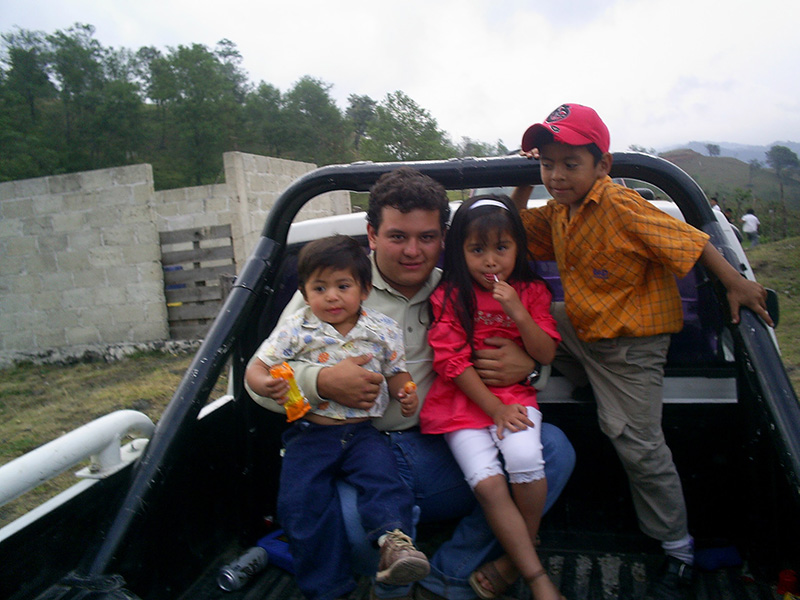
En otro de los viajes que hicimos fuimos a unas montañas que están a varias horas de distancia de la civilización a donde solamente
caminando se puede llegar, es ahí donde vive el papá de Pá, o sea el abuelo, vive en una cabaña de madera, alejado de todo
como un ermitaño, pero tiene una familia muy numerosa, en esa foto sale sólo una pequeña parte de sus nietos.
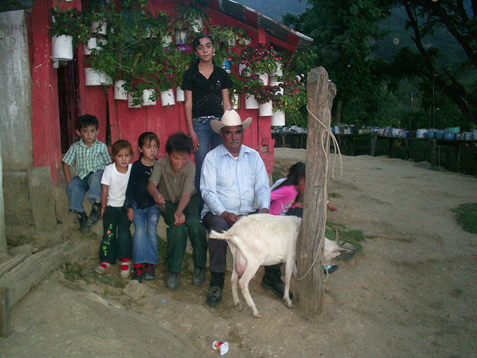
Se nos había hecho tan común viajar, que cada vez sentía más corto el trayecto entre México y Xalapa, y Pá me
dijo que quería que nos viniéramos a vivir para acá, que quería hacer un rancho, comprar vacas y dedicarse a los animales.
Me pareció una idea radical, pero me parecía divertido. Mi única preocupación era poder seguir visitándolos a ustedes,
pero la percepción que yo tenía de lo fácil que era en ese entonces estar yendo y viniendo, sumado a la promesa de Pá
de que cada semana iba a estar viéndolos como si estuviéramos allá, me hizo confiarme y seguir con el plan de vivir acá.
Fue en mayo de 2008 cuando Pá ya tenía todo listo y estaba organizando la mudanza. Y una de las veces que nos fuimos,
por razones de dinero no pudimos regresar a México en dos semanas seguidas, yo ya había terminado la escuela y solo me
faltaban unos exámenes, recuerdo que esas semanas, atrapado acá me dediqué a estudiar todo el tiempo para esos exámenes
finales. Fue ese tiempo el que anduve desaparecido para ustedes, no podía ni comunicarme porque ni siquiera tenía
señal en el celular, ni manera de salir del rancho, estaba como atrapado y sin comunicación. Y lo peor es que
para cuando pude ir a México sólo fue para hacer mis exámenes y solicitar en la escuela una constancia de terminación de estudios
que me iba a servir para poderme inscribir a la universidad acá. De verdad que no tuve tiempo de nada más, me acuerdo que salí
literalmente corriendo de la escuela derechito para la terminal porque tenía que regresar ese mismo día a Xalapa ya que al otro día
era el último para las inscripciones.
Una vez acá en Xalapa me inscribí y empecé a ver la posibilidad de ir a verlos, pero con todos los gastos que estábamos haciendo no podía.
Por eso estuvieron tanto tiempo sin saber de mí. 😔 El tiempo que tuve libre antes de que empezaran las clases en la
universidad seguí visitando lugares nuevos y frecuentando algunas personas que conocí acá. Esta es la casa a donde
llegamos a vivir, no tenía vidrios en las ventanas, la puerta era de madera, no había agua, había que pedirle a los
vecinos y calentarla en una fogata para poder bañarse. Fue algo difícil acostumbrarse a vivir así.
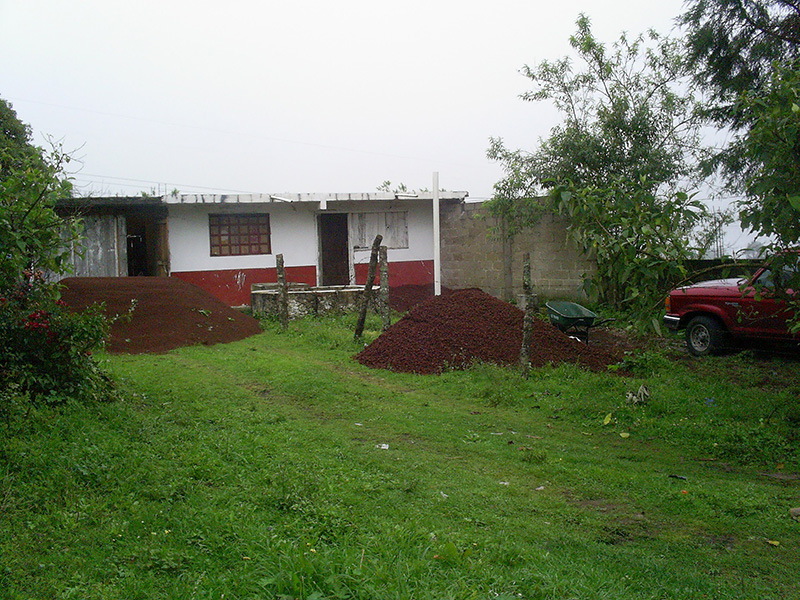
Esta es la hija de un primo de Pá que nos invitó a su fiesta de quince años, me llevaba muy bien con ella.
Hoy en día está casada y tiene dos hijos creo, hace ya años que no la veo.
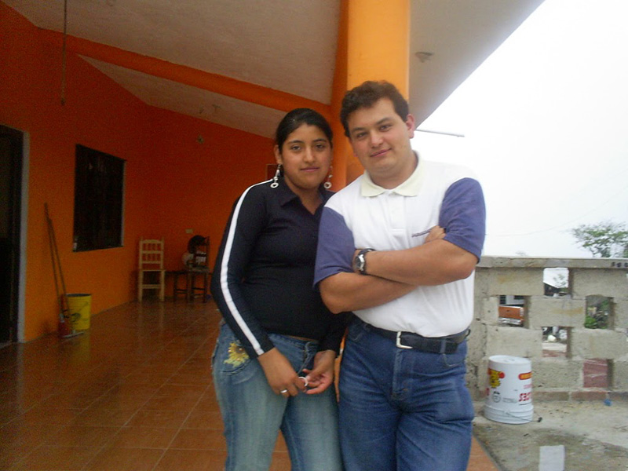
Tuve mucho contacto con la naturaleza,
eso me gustaba mucho de andar por acá, era muy pacífico, interesante, y a veces me sentía como en un juego de Zelda jeje,
subiendo montañas y atravesando bosques.
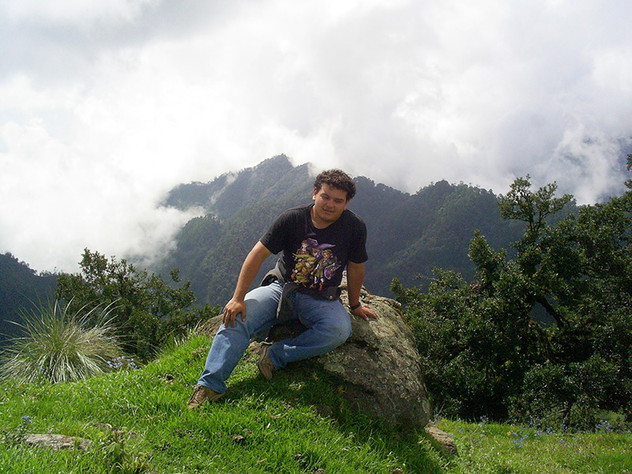
Esta foto de abajo es en la cima de un cerro al que le pusieron unas grandes cruces de metal.
Pero el cerro es tan alto que no se le notan las cruces desde lejos. (La que está junto a mí es una media hermana de Pá)
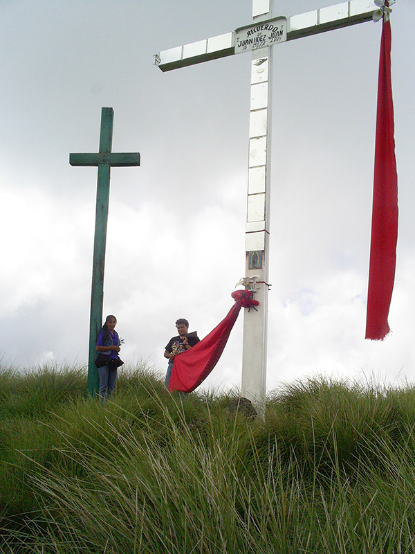
También tuve que entrarle a las labores del campo, como aprender a ordeñar o darle de comer a los animales.
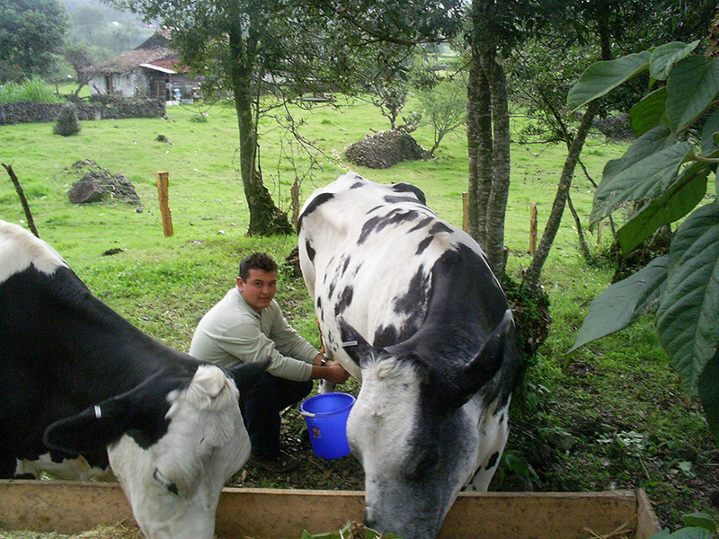
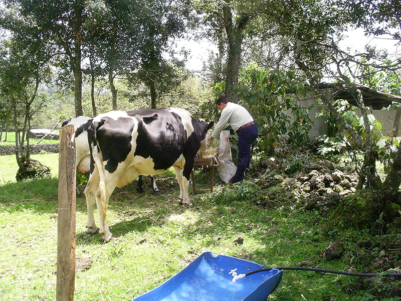
En esta foto estoy en la casa donde vivía mi esposa con sus papás.
De hecho, la niña que está sentada junto a mí, es mi cuñada, la que se acaba de casar. Y atrás de nosotros está el terreno donde seria mi boda,
8 años después de esa foto.
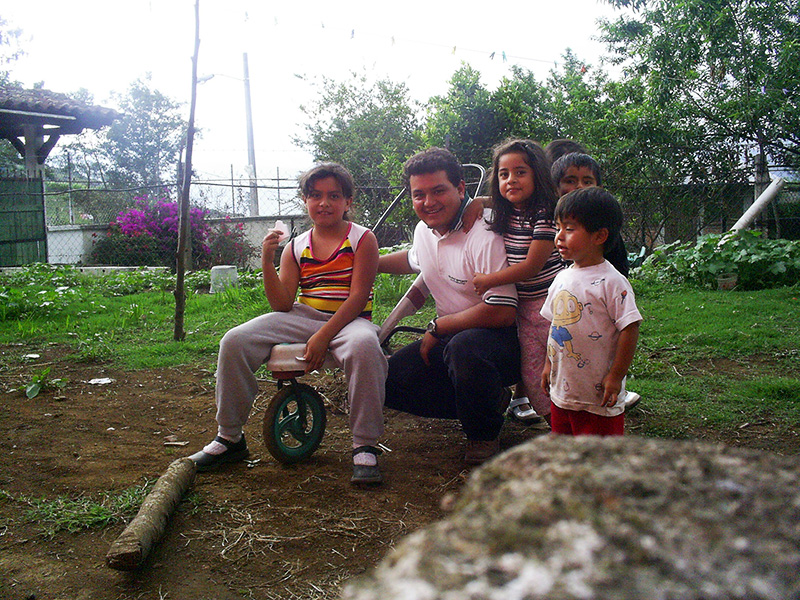
Aquí empieza la verdadera historia. El 13 de junio se celebra la fiesta patronal del pueblo donde vivía mi esposa,
es en honor a San Antonio de Padua. Es curioso porque aquí cada casa del pueblo tiene su fiesta individual ese día.
Cada familia hace comida para mucha gente porque les llegan a comer todos sus parientes y conocidos de otros lugares.
Así que el pueblo se llena de fiestas y gente de muchos lugares. Hay un gran salón en el centro de cada pueblito donde organizan un baile.
Y tienen la costumbre de hacer una especie de competencia. Varias semanas antes de la fiesta patronal, eligen a tres mujeres del pueblo
de alrededor de 15 años para que compitan por ser la Reina del pueblo. El criterio para ganar es recaudar dinero, así que cada
una de ellas, por separado sale a las calles a pedir dinero. Pero nunca van solas, cada candidata a reina siempre va
acompañada de un grupito de amigas que le ayuda. Se llevan un lazo grueso y lo atraviesan a media carretera para que
los carros se detengan y la candidata se pueda acercar a pedirles dinero con un bote, igual que como hacen los de la cruz
roja o los del teletón jeje. Ya que haya cooperado el incauto, bajan el lazo para que pueda pasar. Bueno no quiere
decir que no los dejen ir hasta que cooperen, de hecho, cuando ven que pasa uno que ya cooperó lo dejan pasar sin volverlo a parar.
En caso es que hacen eso durante dos o tres semanas hasta que se llega la fecha de la fiesta patronal y la que haya reunido
más dinero es la que coronan como reina. Me parece que la mitad del dinero es para apoyo de la parroquia del pueblo y la
otra mitad se lo dejan a la candidata en cuestión para que lo use como quiera. Ya te imaginarás para donde voy con este relato.
Resulta que Idania no sólo fue candidata de ese año, sino que también ganó y fue la reina. Otra de las candidatas fue Magaly,
la quinceañera que me invitó a su fiesta, la de la foto que te puse más arriba. Como Pá y yo anduvimos vuelta y vuelta entre Xalapa
y los pueblos, nos detuvieron varias veces y le pedían dinero a él, a mí se me hacía chistoso que tuvieran esa costumbre.
Idania lo detuvo varias veces y se ve que ya hasta le daba pena porque nosotros pasábamos mucho por aquél cruce de caminos donde
se puso ella con sus amigas a pedir dinero. Hoy en día ella y yo bromeamos con eso, diciendo que nosotros nos conocimos en un crucero jeje
Bueno, unos días antes de la fiesta patronal, hubo un baile en el salón del pueblo donde anunciaron el término de la campaña de las candidatas,
y ellas fueron a agradecerle a la gente por su apoyo. Fue ese día que tuve el primer contacto con ella. Durante el día hicieron un
recorrido que era como una especie de desfile. La familia y amigos de cada candidata llevaban sus camionetas y carros adornados,
llevaban sonido y hacían todo el escándalo posible para que se viera lo mas parecido a un desfile. Las candidatas iban cada una
en la parte de atrás de una camioneta a la vista de todos aventando dulces a la gente y saludando. El recorrido se hacía no solo
por el pueblo de la fiesta sino por los pueblos vecinos también. Ese día Pá me había dejado en la casa de Idania, porque, aunque
no la conocía todavía, me llevaba muy bien con los niños de la casa y me la pasaba jugando con ellos. Y cuando fue el recorrido ese,
me agarraron hasta de chofer jeje, bueno me pidieron de favor si podía manejar una suburban que tenían ahí, de esas camionetas
grandes que tú dices que son de diputado jeje, porque la dueña no estaba, pero había dado su permiso para que la agarraran,
nada más que nadie de la casa sabía manejar y yo la hice de chofer de la familia de Idania sin saberlo. Fue divertido.
Ahí anduve en medio del relajo del desfile. Cuando eso terminó, me quedé en la casa de ellos a jugar con los niños, y hasta en la noche llegó Pá.
Una de las hermanas de la que ahora es mi suegra le pidió permiso a Pá de llevarme al baile, y él les dijo "llévenselo, que aprenda a bailar porque es bien aguado",
de hecho, me dio permiso de quedarme a dormir ahí en casa de ellas. Pues resulta que la tía de Idania, esa que le pidió permiso a Pá,
la anduvo ayudando a vestirse para el baile y dándole instrucciones de lo que iba a pasar a decir al micrófono. Me acuerdo que hasta
ese momento supe quién era la famosa Idania, a la que había ido a acompañar en el dichoso desfile. Esta es la primera foto que le tomé,
su tía le prestó ropa y la maquilló para que fuera a lo del agradecimiento en el baile. Yo bromeaba con que se veía bien ruda vestida
así, y las tenía risa y risa a ella y a su tía.
Capítulo 1. Siendo amigos.
He notado que, al menos en mi experiencia, lo que ha generado interés en algunas mujeres, es el sentido del humor.
Casi nunca tuve éxito siendo serio, por el contrario, entre más hacía reír a alguien, notaba que se sentía a gusto
conmigo y no me soltaba. Es lo que me pasó con Idania.
Esa noche yo estaba en su casa como "amigo" de su tía, la que me embarcó a ir al baile y quedarme a dormir ahí.
Para ser sincero o no sentí una atracción por Idania esa noche, fuera de la leve emoción de conocer a alguien nuevo.
Sólo me divertía haciéndolas reír.
Una vez que salimos de su casa rumbo al salón, su tía nos dijo que nos adelantáramos
y nos mandó por delante. No estaba lejos, caminando eran como 5 minutos. Pero como Idania y yo no teníamos nada de
confianza todavía nos fuimos muy serios y callados todo el camino. Cuando casi llegábamos me dijo que la acompañara
a casa de una amiga porque quedó de pasar por ella. La amiga en cuestión (se llama Karen) vive en frente del salón
así que pasamos por ella, y fue un alivio para mí que Idania tuviera con quien platicar porque yo no sabía ni que decir
y nada más me quedaba callado. Karen tiene casi la misma edad que Idania, son muy amigas desde la infancia.
Esta es una foto de Karen en aquella época.
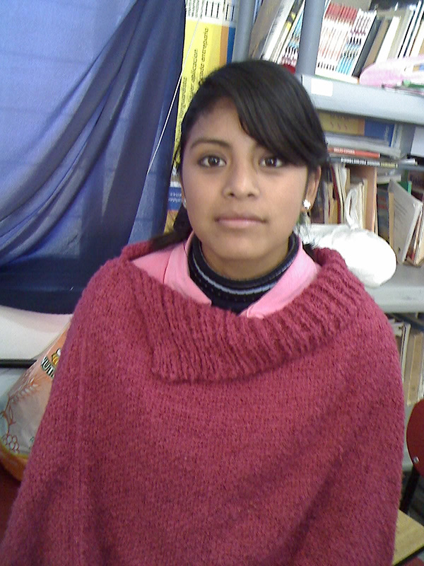
Pues entramos al salón y yo encontré una amiga que había estado frecuentando algunos días antes, se llama Erika,
y me estaba enseñando a bailar, a la fuerza porque a mí me daba pena jeje. Dejé a Idania con Karen y me fui a
platicar con Erika, estuve con ella todo el evento, ya cuando terminó, busqué de nuevo a Idania y a su tía para
irme con ellas, porque me tocaba dormir en su casa. Llegamos de madrugada y su tía me prestó su recámara para dormir.
A la mañana siguiente me levanté entre las 9 y 10 de la mañana, muy desvelado. Como debía esperar a que Pá fuera por mí,
no tenía nada que hacer, así que empecé a vagar por la casa hasta que encontré a Idania trapeando su cocina, lo que me
sorprendió, porque hasta ese momento supe que ella vivía ahí. Como no había nadie más, me puse a platicar con ella,
ya sabes, el tipo de platica que se inicia con preguntas básicas y comentarios de acuerdo con la situación, como...
"Hola, ¿qué haces?", "Ya te dejaron haciendo el quehacer", "¿Cómo te fue a noche?", "¿No tienes sueño?",
"No sabía que vivías aquí, ya he venido a esta casa y no te había visto", "¿A poco te gusta Eros Ramazzoti?,
a mí también" (ella estaba escuchando música mientras limpiaba su casa), etc. Y así empezamos a platicar cada vez
con más confianza. Me dio de desayunar y estuve con ella hasta que llegó Pá por mí, y antes de irnos, nos invitó
a comer en su casa, en la fiesta patronal, y es que, además, el día de la fiesta, su hermana iba a hacer la primera comunión.
Para continuar necesito contarte un detalle. La casa donde vivía Idania es un terreno grande, propiedad de su abuelo.
Es decir, sus abuelos son los dueños de la casa, pero conforme sus hijos se fueron casando y haciendo familia, les
fueron dando a cada uno un pedazo de tierra donde construir su casita, así que vivían todos juntos. Es como cuando
Lucha y/o Lety vivían con Mima, la casa es de Mima, pero sus hijas ya casadas se quedaron a vivir ahí con todo y familia.
Esa era la situación ahí, por eso, aunque visité esa casa en otras ocasiones, casi siempre veía gente diferente,
es una familia muy numerosa.
Días después un tío de ella (que también vivía ahí) hizo una fiesta para la mayor de sus hijas que aún era una
niña en ese entonces. Y también estábamos invitados Pá y yo, pero como él andaba en otros asuntos sólo fui yo.
En esa fiesta infantil conocí a Monserrat, la hermana de Idania también era una niña como de 9 años en aquel entonces,
y al parecer le caí bien porque no paraba de reír con mis ocurrencias y no me soltaba, anduve jugando con muchos niños ese día.
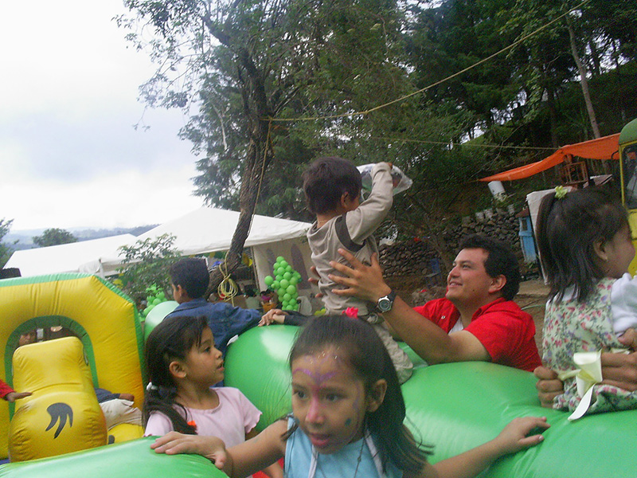
Ellos son los papás de la festejada, el tema de la fiesta fue de Toy Story, se alcanza a ver a la niña con su mamá,
y su hermano siendo cargado por el papá.
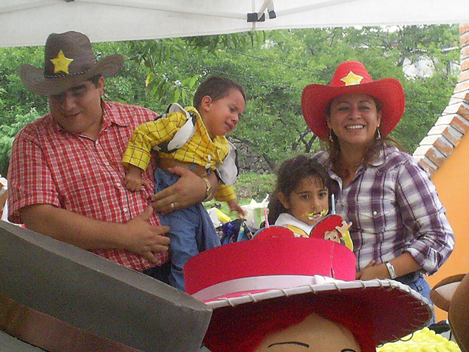
Después de esa fiesta, la familia de Idania se empezó a familiarizar conmigo y a invitarme más seguido a la casa,
días después estuve comiendo con ellos, y siempre era Idania la que me recibía, me pasaba a la mesa y me ofrecía
de todo lo que tenían de comer, me servía y todo, es que terminó siendo ella la que más me conocía y por eso yo
llegaba a la casa en calidad de "amigo de Idania". Uno de los días que fui, Monse se andaba probando el vestido
que iba a usar en su primera comunión y como vieron que yo siempre andaba con cámara en mano, me asignaron la tarea
de tomarle fotos ese día, así que ahora no solo estaba invitado, era el fotógrafo oficial.
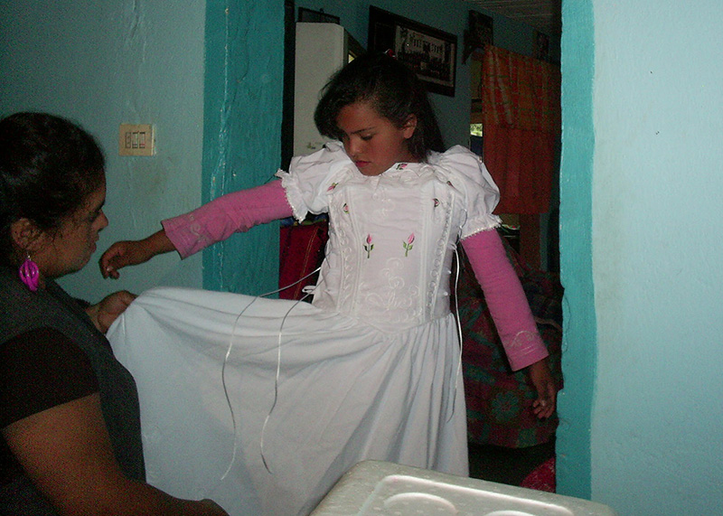
Ella es Monse ya el día de su primera comunión regresando a su casa con sus papás después de la misa.
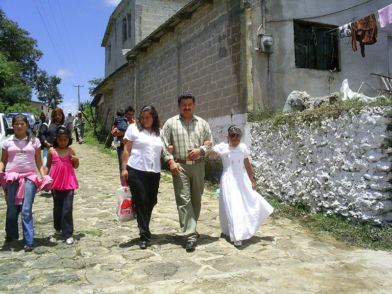
Durante la comida de ese día estuve ayudando a Idania a hacer su banda, esa que va desde un hombro hasta la cintura,
pero ya con la leyenda "Reina 2008".
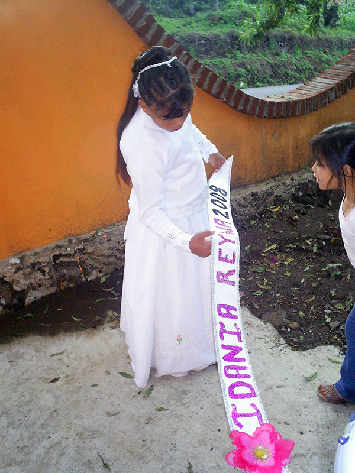
Esa noche tampoco estuve con ella, anduve bailando con Erika, pero vi y fotografié el momento de la coronación
y todo ese relajo. Mira, Idania está a la izquierda, Magaly la de la foto del correo anterior es la del centro
de la foto, y a la derecha está la otra candidata, a ella de plano no la conozco.
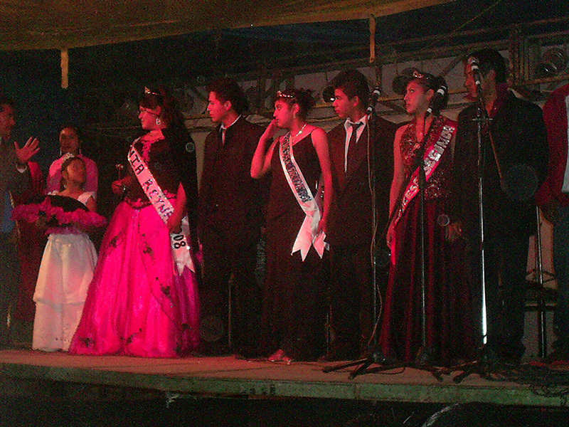
Después de ese evento seguí frecuentando la casa de Idania y ya llegaba directamente a verla a ella,
nunca tuve problemas de que sus papás o sus tíos pensaran mal de mi o me cuestionaran, al contrario,
siempre me llevé bien con toda la familia y les gustaba que fuera a visitarlos. Poco a poco me fui haciendo
cada vez más amigo de Idania y de su hermana. La clave fue que jugábamos y bromeábamos mucho, casi nunca
parábamos de reír, ellas tenían mucho interés porque les contara como es vivir en México, y pues yo les
contaba de mi familia, de mi escuela, de los lugares en los que he estado, etc. Y también les contaba lo
que hacía ahora con Pá, era un rollo eso de ser ranchero, pero era divertido. Presencié el parto de una vaca
y quedé traumado jeje,
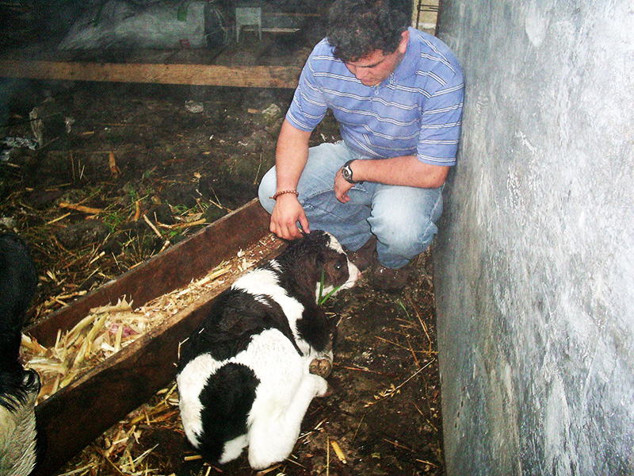
Estos son Pá y su hermana cuidando a sus vacas.
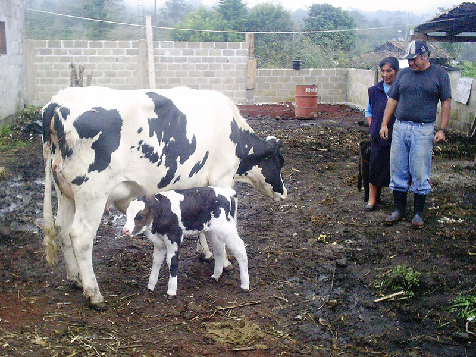
En las semanas que siguieron, como todavía era temporada vacacional me dediqué a visitar mucho a Idania,
como 4 o 5 días a la semana estaba allá metido en su casa, y todo era jugar y platicar.
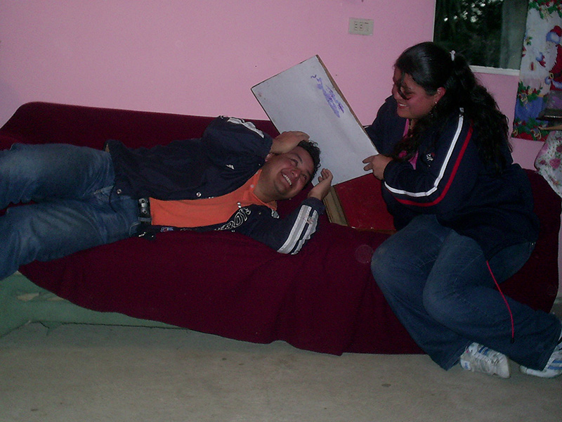
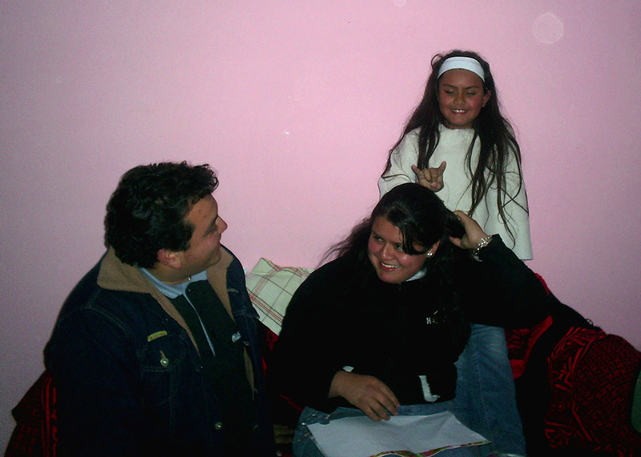
Cuando entré a la escuela, mis visitas se hicieron menos frecuentes, pero más extensas, a veces llegaba
en la mañana y me iba de su casa en la noche, los fines de semana era de cajón que las iba a ver.
Yo lo hacía porque vi que ellas eran las personas más sencillas que había conocido desde que llegué.
Muy alegres, tranquilas, divertidas, etc., pero aún no se me pasaba por la mente siquiera andar de novio con Idania.
Así transcurrió el resto del año. Pero ese medio año de tratarla casi a diario fue suficiente para irle tomando
cariño, de amigos, pero a fin de cuentas un cariño especial que no tenía con nadie más. Me emocionaba ir a verla,
porque era divertido, pero no porque quisiera andar con ella. Sólo la veía como una amiga, a las dos,
también a su hermana. Pues cuando llegó febrero, ellas me prepararon una sorpresa, me fueron a ver a la casa
donde vivía con Pá y con su media hermana. Porque he de contarte que su hermana de Pá (se llama Liboria),
se nos pegó desde que llegamos y hasta la fecha, ya después de que me casé, aún sigue con él.
Bueno pues Monse y Dani llegaron de visita... Otro paréntesis, toda su familia le dice Dani, como
abreviatura de "Idania", y siempre que nos veían juntos nos dicen "Los Danis".
Me fueron a ver por mi cumpleaños y me llevaron regalos. Fue ahí cuando me regalaron mi elefante azul de peluche.
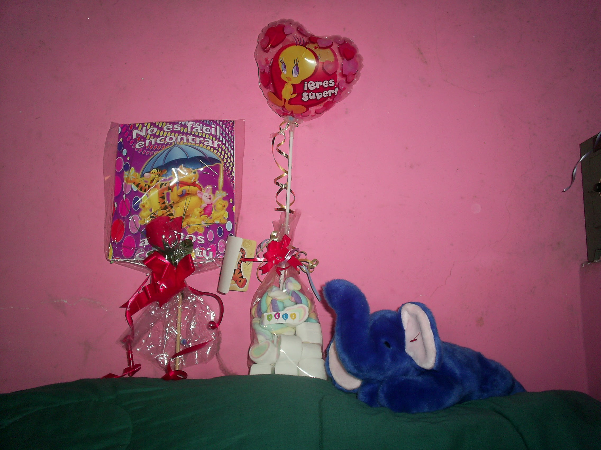
Después de eso le tomamos mucho cariño al peluche, nos lo turnábamos para tenerlo unos días cada quien,
y cuando me tocaba a mí no lo dejaba para nada, lo llevaba hasta a la escuela.
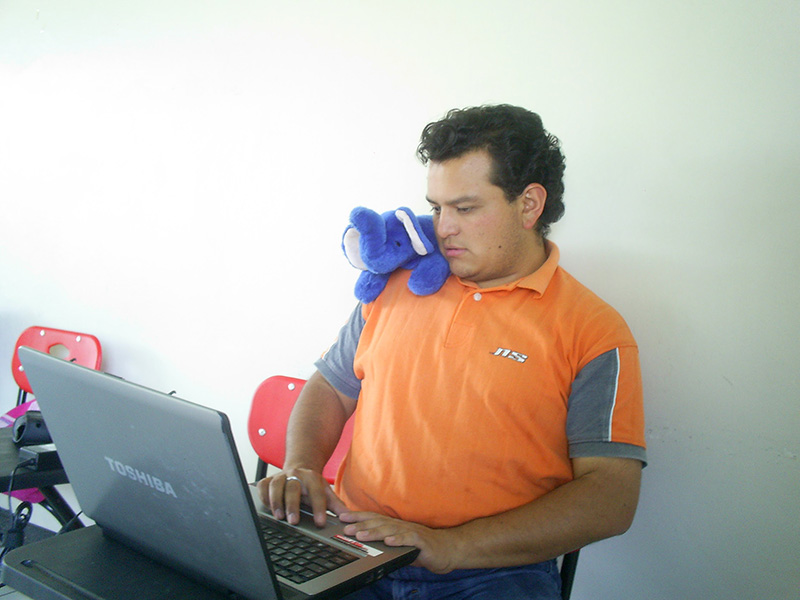
Y empezamos a bromear con que éramos sus papás, hasta ella y su hermana se ponían a jugar enseñándole a caminar jeje.
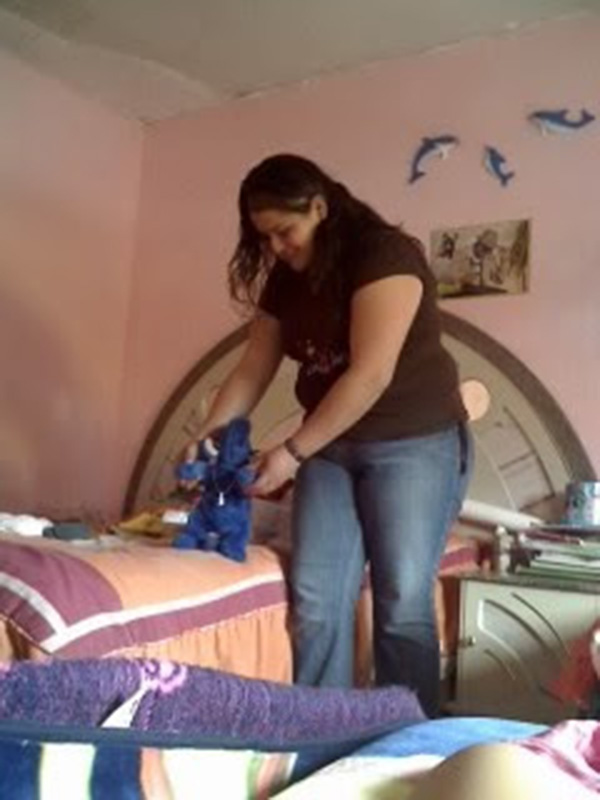
Ese juego de que éramos los papás del elefantito fue lo que hizo que me empezara a encariñar con Idania de una
manera diferente y hasta entonces me empezaron a pasar por la mente pensamientos sobre hacerme novio de ella.
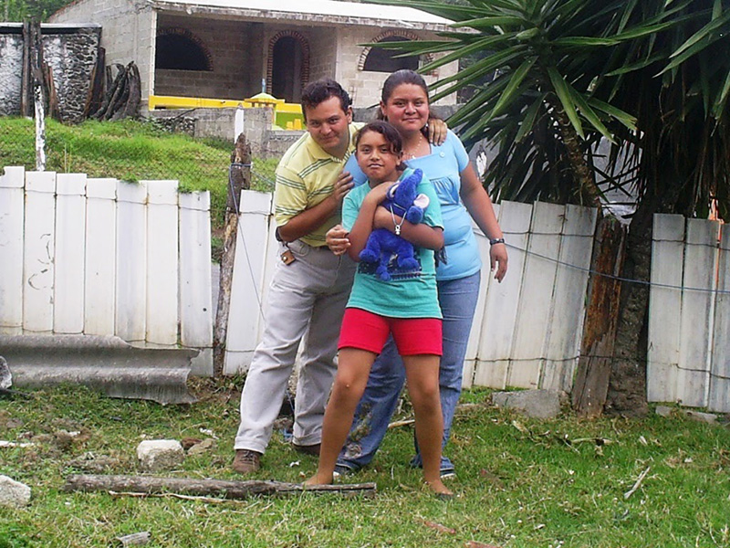
Cada vez era más tierno y sentimental el juego. Para ese entonces ya nos comunicábamos también por celular,
en mensajes de texto, y a veces cuando a ella le tocaba tener el elefante y yo andaba en la escuela, me mandaba
mensajes, así como: "el bebé te extraña". o "Ya quiero que sea domingo para que vengas".
El caso es que fue una relación de amistad tan pacífica y alegre, que cuando menos nos dimos cuenta,
ya estábamos enamorándonos.
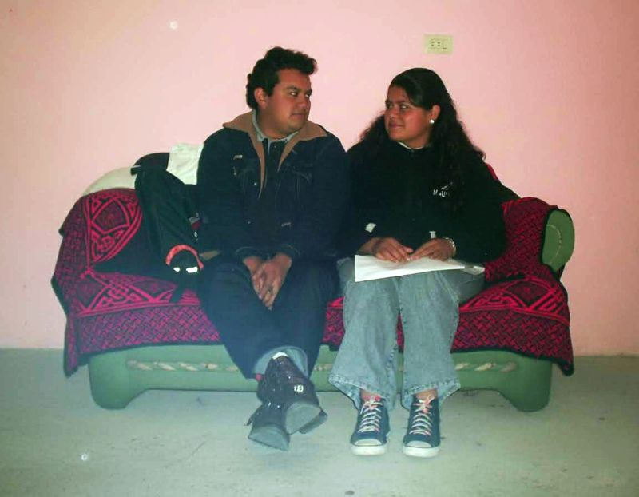
Ya nos mandábamos mensajes de "Te quiero mucho", "Te extraño", etc. Pero todo fue paulatino,
desde junio que la conocí hasta junio del siguiente año, tuvimos suficiente tiempo para conocernos más o menos bien
y establecer lazos sentimentales muy fuertes. En mi laptop ya tenía fotos de ellas y a veces ponía de fondo una foto
de ella o a veces de su hermana, las empecé a querer mucho a las dos.
Mas o menos como por mayo de 2009, a casi un año de conocerla y estarla tratando, me decidí a pedirle que fuera mi novia,
estuve un mes planeando como hacerlo y elegí el día de la fiesta patronal para hacerlo. Exactamente a un año de haberla conocido.
Días antes ya había estado calculando las probabilidades de que me dijera que sí. Le pedí consejo a mis amigos más
cercanos de la escuela, les conté toda la historia y ellos me animaban a declararme, me decían que con la relación
tan bonita que teníamos era casi seguro que ella también quisiera andar conmigo. Yo estaba muy nervioso.
Y uno de mis compañeros de la escuela con los que no me llevaba mucho, pasó por ahí y vio que tenía una foto de ella
como fondo de pantalla de mi laptop, y me preguntó "¿Es tu novia?", y yo le dije que sí, y me contestó "Está linda".
Eso me dio una idea. Le escribí a Dani y le conté eso, que me habían preguntado que, si era mi novia y que yo había
contestado que sí, y todo eso. Y ya sobre la conversación (en mensajes) que le digo algo así como... "¿cómo ves?,
¿qué chistoso verdad? me hizo pensar ¿cómo sería andar tu yo?", y que me va contestando... "¿Pues creo que sería chido no?".
Le mostré ese mensaje a mis amigos de la escuela y me dijeron que ya no había duda, que prácticamente ya me había respondido
que sí quería ser mi novia. Que podía declararme a la segura, sin miedo.
Capítulo 2. Primera etapa de noviazgo.
Pues ya con el ánimo que me dieron mis compañeros de la escuela y la respuesta que ella me dio en mensaje, me
sentí mucho más seguro. Ya sólo le escribí que nos veíamos el día de la fiesta y que tenía "algo importante"
que decirle. Anduve muy ansioso el día antes de la fiesta patronal. Lo primero que hice fue asegurarme de que
Pá me dejara ir a la fiesta, porque como él andaba muy ocupado con otros asuntos y además estábamos invitados
a muchos lados ese día pues yo ya estaba dudando que fuéramos para allá. Hablé con él y lo convencí de que él se
fuera a donde quisiera pero que me dejara ir a esa casa a mí. Ya cuando quedamos de acuerdo me puse a planear
como vestirme para ese día, que iba a decir, si debía o no llevarle algo, eran muchas cosas que tenía que
resolver. Parece tonto, pero cuando uno está enamorado, hasta el más mínimo detalle quiere prever para que
todo salga perfecto.
El día llegó, pero Pá quería que fuéramos a otro lado y me prometió que después me pasaba
a dejar a la casa de Idania. Entonces me tuve que ir con él y regresé cuando ya estaba oscureciendo. Llegué a su
casa y me dijeron que ella se había ido a la feria pero que no tardaba en regresar. La esperé, pero la
impaciencia me empezó a poner algo molesto, yo sentía que nada estaba saliendo bien y que había tanta gente
que tal vez no tuviera oportunidad de hablar con ella en privado. Llegó de la feria y como ya era de noche lo
primero que hizo fue ofrecerme de cenar, me pasó a su casa, que estaba a unos metros de la casa principal que
era de sus abuelos, pero como todo el alboroto de las visitas y la comida principal era en el comedor de la casa
de su abuelo pues pudimos estar solos. Mientras me servía aproveche para empezar con mi "discurso".
No me acuerdo exactamente cada palabra que le dije, pero a grandes rasgos le dije que había estado pensando sobre
lo que le dije el otro día por mensajes (el de cómo sería si anduviéramos), le dije que ella era para mí la mejor
amiga que había tenido, que me gustaba que congeniábamos muy bien y nos entendíamos a la perfección, y que se
me había formado por ella un cariño más que de sólo amigos, que la quería mucho y que la verdad me gustaría
mucho que pudiéramos experimentar esa etapa de ser novios; que si como amigos nos habíamos llevado muy
bien, tal vez como novios sería una relación aún más profunda y bonita. Algo así le dije, y terminé con la
típica frase de... "entonces quería saber si... ¿quieres ser mi novia?"
Aquí fue donde empezó el drama del
siglo, porque lo más lógico era que me dijera que sí y que fuimos felices para siempre. Pero no fue así.
Resulta que mientras yo le decía todo, ella se ponía más y más nerviosa, se puso roja y como que le quería dar
risa, y cuando terminé de decirle y ella terminó de servirme la cena, solo me dijo "siéntate, ya está tu
plato", y yo le dije, "sí, pero contéstame lo que te pregunté". Entonces ella se puso más roja y, señalando mi
plato de comida, me dijo "come". Yo insistí, "No, primero dime". Y así nos dijimos como dos o tres veces hasta
que no me quedó de otra más que sentarme a comer porque entró su mamá y su hermana y ya no tuve oportunidad de
volver a hablar con ella en privado. Me dio mucho coraje que el breve momento que tuvimos solos se hubiera ido
y que no me haya dicho nada. Pues terminé de cenar y pasó un rato hasta que de plano ya era evidente que era muy
tarde como para estar de visita todavía, serían casi las diez de la noche cuando me despedí de su familia y
ella me acompañó al portón (como un zaguán, pero mucho más grande y al aire libre) de la entrada de su casa para
despedirnos. Ahí estando solos le insistí. "¿No me vas a contestar lo que te pregunté hace rato?", y ella no
sabía que decir, cambiaba el tema y se despedía, le urgía que ya me fuera. Entonces me enojé mucho, le dije que
si no quería andar conmigo que me lo dijera y que no la iba a volver a molestar. Pero que necesitaba una
respuesta, un sí o un no, y ya. Se le notaba mucha desesperación por dejar el tema, pero sin tener que
contestar, me dijo que luego me decía, y yo me aferraba a que quería una respuesta en ese momento.
Pues total que no logré nada esa noche, por más que le insistí y la amenacé con ya no verla, nunca le pude sacar una
respuesta ni negativa ni positiva. Hice mi berrinche y me fui de su casa muy enojado. La casa donde estaba
viviendo con Pá quedaba a exactamente 2 kilómetros (los medí muchas veces), pero era cuesta arriba y era muy
cansado llegar hasta allá caminando, pero me fui así, en la total oscuridad, solo era el camino en medio del
campo y había una tenue luz de la luna. Todo el camino fui haciendo coraje, iba muriéndome de vergüenza
pensando en que todo había salido mal, en o mucho que había esperado ese día, en que había montado mi teatro y
preparado mi discurso y todo para nada. No podía dejar de pensar sobre todo en que tal vez ella se iba a ir al
baile de esa noche en el salón del pueblo, esos bailes empezaban regularmente a las 10 u 11 de la noche y
terminaban como a las 3 de la mañana, y me daban celos de imaginarla divirtiéndose con otros muchachos
mientras yo como tonto haciendo mi berrinche, y más coraje me daba. Pensé en la posibilidad de ir al baile y
buscarla ahí para ver si ahora sí me contestaba, pero luego pensaba en que tal vez ella no quería andar
conmigo y solo la hubiera molestado si la buscaba en el baile para seguir insistiendo con lo mismo. Y también
estaba la posibilidad de que ella no fuera y yo anduviera buscándola como tonto. Seguí caminando y pensando
hasta que llegué a la casa, me metí y me acosté, me dormí muy tarde pensando en ella, sintiéndome muy mal por
todo lo que había pasado, sentía coraje, vergüenza, tristeza, de todo.
A la mañana siguiente, Pá salió temprano, y me preguntó que iba a hacer yo, le dije que no sabía pero que quería quedarme en la casa. No tenía
ganas de salir ni de ver a nadie, estaba como deprimido todavía por mi fracaso de anoche. Tenía muchas ganas
de verla, pero me apenaba mucho haber perdido el control y haberme enojado. Pensaba una y otra vez en que pude
haber hecho las cosas muy diferente si hubiera tenido paciencia y auto control. Ya como a las 12 del día me
decidí bajar a verla. Pero como pensé que ella no iba a querer verme por la manera en que me porté, lo que hice
fue escribir en un papel: "Perdón por lo de anoche, si me dejas quiero hablar contigo en privado, te prometo
que no te quito mucho tiempo". Recorrí los 2 kilómetros a su casa como en 20 minutos, es que cuesta abajo es
mucho más fácil jeje.
Cuando llegué andaban ya muy pocos de sus familiares, todos haciendo el quehacer por
el tiradero que se quedó de la fiesta. También ella andaba recogiendo. Llegando le di el papel
discretamente, pero sin decirle nada, y en lo que lo leía yo pasé a saludar a su mamá y a su hermana. Para cuando
regresé a donde estaba ella le pregunté "¿Ya lo leíste?", y me dijo que sí; le pregunté "¿Sí podemos
hablar?", y me dijo que sí. Entonces nos fuimos a su cocina y nos sentamos a platicar, me disculpé por mi
actitud de la noche pasada, y le dije por qué había sido, le dije que yo estaba muy nervioso y que nada me salió
como pensaba, que por eso me había enojado.
Después por los comentarios que hacían su mamá y su hermana entre
ellas, alcancé a escuchar que Dani sí se había ido al baile, y sentí como una cubetada de agua helada. Me dio
muchísimo coraje primero, después celos, después tristeza. Pero esta vez sí me controlé, no exploté ni
reaccioné bruscamente, pero sí le hice saber cómo me sentía. Le dije que me sentía como un tonto, porque yo
había estado llorando y sufriendo por ella la noche anterior, mientras ella se había ido a bailar y a
divertir bien quitada de la pena. Me sentí tan estúpido que no sabía si estar enojado o triste. Ella solo
estaba callada escuchándome, de vez en cuando me hacía un gesto de tristeza.
Llegó un momento en todo lo que le dije en que mis palabras empezaron a cambiar de curso, sin proponérmelo, lentamente cambié de
disculparme y lamentarme, a decirle lo mismo que la noche anterior, pero con palabras espontáneas, no
ensayadas. Le dije lo mucho que me importaba, lo mucho que la quería, y que solo quería estar con ella, que me
hacía muy feliz estar a su lado y que sólo esperaba que ella sintiera lo mismo. Le pregunté que si sentía lo
mismo y ella asintió con la cabeza. Y que le hago la otra pregunta: "Entonces... ¿Sí quieres ser mi novia?", y
volvió a asentir con la cabeza. Me quedé helado, no sabía que más decir o hacer.
Ella estaba sentada al otro lado de la mesa, solo pude sonreír y decirle la verdad, que no lo podía creer y que estaba muy feliz. me dijo que
ella tampoco l podía creer y que también estaba muy feliz. Me contó que la noche anterior estuvo tan nerviosa
que no supo que contestar, aunque admitió que todo el tiempo supo a qué iba yo ese día. Ya sabía la pregunta que
le iba a hacer, pero en el momento no supo lidiar con ella. Y por eso mejor evadió el tema. Esa tarde fue como
las de siempre, jugar, reír, pasarla bien los tres (porque su hermana nunca se nos despegaba) y pues estar
platicando hasta que se hizo de noche.
Unos días después de eso, fui a verla a la escuela, yo ya sabía bien cuál
era su horario y me acerqué a la reja en la hora del receso. Llamé a una de sus compañeras que andaba cerca de ahí
y le pedí de favor que le dijera a Dani que yo le hablaba. Fue a llamarle y mientras Dani se acercaba a la reja
noté como todas sus compañeras se le quedaban viendo y le hacían "uuuuuu", como burla de que la fue a ver el
novio a la escuela. Platicamos como dos minutos jeje, ella por dentro y yo afuera de la reja, nada más le dije
que la había querido ir a ver, la noté muy seria, tanto que hasta le pregunté que si no se había arrepentido de
haberme dicho que sí. Me dijo que no era eso, solo que no sabía cómo actuar en esas circunstancias. Todo esto
era nuevo para los dos. Los días siguientes, cada que la visitaba era como si nada hubiera pasado, porque
como andábamos a escondidas pues no podíamos tratarnos como novios, es decir, nada de abrazos, besos, ni
siquiera tomarse de la mano. Pero estábamos contentos de saber que ya éramos novios.
Como a su hermana le encantaba jugar en mi laptop, con eso la entreteníamos en lo que nosotros teníamos nuestras primeras
experiencias de novios, como un abrazo rápido para que no nos vieran, o un beso en la mejilla. Parecíamos
niños de primaria, nos emocionábamos mucho con una pequeña caricia o un beso rápido en la mejilla. Hasta que
un día, mientras su hermana estaba ocupada jugando los Sims 3, Dani estaba sentada en un sillón de su sala y yo
andaba parado yendo de un sillón a otro, platicando con ella y enseñando a Monse como se jugaba los Sims, y
entre plática y plática las hice reír, me acerqué a Dani, la agarré de los cachetes y le di primero un beso en la
frente, ahí mismo sin soltarla le di otro en un cachete y al final le di otro en los labios, así rápido y la
solté. Después de eso me fui a sentar con Monse a seguirle explicando del juego, y cuando volteo a ver a Dani,
estaba bien roja de la cara, pero exageradamente roja. Ya un tiempo después me dijo que se había puesto así de
roja porque ese había sido su primer beso, que nunca nadie la había besado antes. Eso del beso fue el 4 de
julio, pasó casi un mes desde que empezamos a andar hasta eso, y es que casi no había oportunidad de nada
porque nunca estábamos solos.
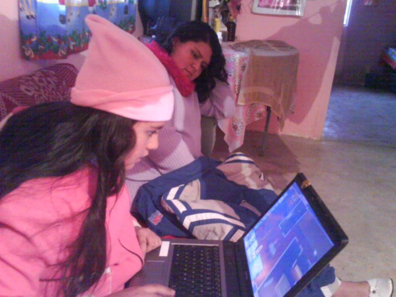
Otra de las experiencias que tuvimos fue el 15 de septiembre de ese mismo año,
sus tías estaban de locas que se querían ir al baile, y nosotros nos íbamos a ir con ellas, es que en ese pueblo
hacen baile por cualquier cosa y a cada rato, entonces ese día era por lo de la independencia. Pero a la mera
hora que ya iba a empezar el dichoso baile se les fue la luz en el salón, y creo que se canceló el baile o algo así.
Pues sus tías no querían quedarse sin bailar y se querían ir a Xalapa a buscar otro baile o fiesta donde estar
hasta tarde. Recuerda que estábamos en el rancho y salir a Xalapa era como ir al centro, a la civilización.
Dani y yo no quisimos ir porque se nos hacía muy lejos y nos daba miedo que sus tías y sus respectivos novios
iban con la idea de tomar, y como iban a manejar porque ellos tenían sus carros, pues nos daba desconfianza.
Insistimos en quedarnos hasta que aceptaron. Cuando ellos se fueron eran las 11 de la noche, y Dani me llevo
al cuarto donde me iba a quedar, era un cuarto de la planta alta de la casa, pero tenía la puerta principal
cerrada con llave, tenía una puerta trasera, pero para entrar por atrás uno debía subir unas escaleras de
caracol hasta la azotea, atravesar la azotea y bajar por otra escalera de caracol que llegaba hasta la
puerta trasera.
Subimos, pero con el pretexto de ver las estrellas nos quedamos recargados del barandal de
la escalera de atrás, y con el pretexto de que hacía mucho frío, porque la verdad sí hacía mucho frío, nos
abrazamos y estuvimos contemplando las estrellas, platicando y de vez en cuando, dándonos algunos besos
de "piquito" jeje. Estuvimos así desde las 11 de la noche hasta como las 2:30 de la madrugada, y eso porque ya
nos estábamos cayendo de sueño. Me enseñó donde iba a dormir, que era la parte de arriba de la casa de sus
abuelos y ella se fue a su casa, bueno más bien yo la acompañé hasta la puerta de su casa, nos despedimos,
regresé a la casa de sus abuelos volví a subir hasta la azotea, bajé por atrás, entré y me acosté, y cuando
acababa de acomodarme, escuché como venían llegando sus tías. Lo que significa que si nos hubiéramos
estado otro rato ahí arriba nos hubieran cachado.
De ahí en adelante, cada que podía la visitaba en la
escuela a la hora del receso y le llevaba una rosa o una carta. Nos mandábamos mensajes todos los días.
Recuerdo que era mucho gasto porque en aquel entonces se cobraba un peso por mensaje y además tenían un
límite de caracteres. Pero aun así nos escribíamos unos cuantos mensajes, solo por la mañana porque era
cuando ella estaba en la escuela y sólo ahí tenía señal, ya cuando regresaba a su casa estaba incomunicada.
Mas o menos así transcurrió la primera parte de nuestro noviazgo, fueron muchas emociones fuertes. La
mayor parte del tiempo todo fue (como dicen) color de rosa, pero otras veces yo me moría de celos cuando ella
se iba los bailes con sus tías. Yo no iba porque, no tenía permiso de Pá para salir de noche, solo con algunas
excepciones, pero no podía estarle pidiendo permiso todo el tiempo para salir porque además necesitaba un
buen pretexto, no le había dicho todavía que andaba con Idania.
Capítulo 3. La pausa.
Así pasaron los meses, tratándonos como amigos en público y buscando pequeños momentos en privado para un
pequeño abrazo o una caricia. Pasé varios momentos importantes con ella, como el nacimiento de su hermano
menor en noviembre de 2009, cumpleaños de su hermana, de su mamá, fiestas patronales de pueblos vecinos,
año nuevo, etc. Todo iba (según yo) muy bien, hasta que un día, el 12 de abril de 2011, cuando la visité, me dijo
que tenía algo que decirme. Y no recuerdo las palabras que usó, pero me dio a entender que quería que
dejáramos de ser novios. Empezó poco a poco, eran insinuaciones nada más, pero conforme fui entendiendo de
que se trataba, me empezó a entrar un miedo horrible, no podía creer que fuera lo que me estaba imaginando,
pero cada vez me daba más y más pistas y vi que hablaba muy en serio, entonces le pregunté directamente si
quería que termináramos y me dijo que sí.
No te imaginas lo difícil que fue, no sabía lo que estaba pasando, no
sabía cómo era posible que todo fuera bien y de un momento a otro todo cambiara. Le pregunté si es porque había
otra persona, o sea que, si se había enamorado de alguien más, y me dijo que no. Le pregunté muchísimas veces
por qué razón me estaba dejando, y nunca me dijo. Simplemente ya no quería andar conmigo y ya. No podía ni
siquiera llorar porque ahí cerca andaba su hermana, pero me puse muy muy triste. Le preguntaba una y otra vez
que, si yo había cometido algún error, o que si había hecho algo para que ella tomara esa decisión y me decía
que no. Yo estaba desesperado por saber la razón y ella nunca me dio una. Al final me vio tan mal, tan
deprimido, tan alejado de la realidad, que me dijo que olvidara todo lo que me había dicho, que no pasaba
nada, y que seguíamos siendo novios. En el momento me calmé, pero ya en la noche en mi cuarto no podía dejar de
pensar en eso, hasta ahora seguíamos siendo novios, pero la intención de separarnos ya la había
manifestado y eso era algo que me tenía muy preocupado, yo sabía que tarde o temprano me iba a volver a decir y
era inevitable que termináramos.
Al día siguiente la fui a ver, y efectivamente me volvió a decir que ya no
podía seguir conmigo, que teníamos que darnos un tiempo. Ese día, como sí estábamos solos, lloré, le
supliqué, me deshice de tristeza enfrente de ella. Pero aun así no cambió de parecer. Todo el llanto me hizo
desahogarme y al final acepté que ya no seríamos pareja. Lo único que me daba un poco de esperanza es que no me
dijo que terminábamos definitivamente, sino que se refirió a que quería un tiempo para pensar y tal vez
después regresaríamos. Las semanas siguientes seguí visitándola como siempre, pero me sentía muy
incómodo de ya no ser su novio, me sentía desplazado. Y lo peor fue que ella empezó a cambiar su manera de ser
conmigo. Era fría, insensible, a veces hasta grosera, ya no me prestaba atención como antes.
Para empeorar las cosas, en ese entonces se empezó a juntar con su vecina de enfrente, y esa tipa es una loca de esas que se la
pasan coqueteando con los hombres. Ellas dos se ponían a hablar de que les gustaban los taxistas que pasaban
por ahí, porque los conocían, es un pueblo pequeño y todos los taxistas son conocidos de por ahí. A mí me daban
muchos celos y ella se daba cuenta y lo hacía más a propósito. Con el paso de los días empezó a utilizar
groserías y a ser de una manera muy rara. Cuando la situación se puso insoportable para mí, y como por ese
entonces ya había dejado la escuela, decidí irme para allá con Mima un buen tiempo. Fue una de las veces que me
pasé allá como tres semanas seguidas.
Estas fotos son de esa vez que estuve en casa de Mima.
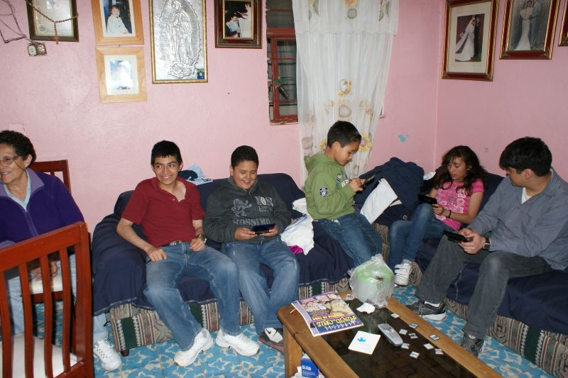
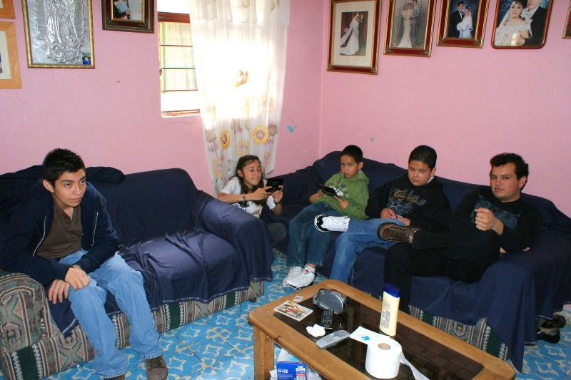
Pero a Dani no le avisé que me iba. Ella estaba acostumbrada a que la
visitaba todos los domingos sin falta, pero así sin avisar dejé de verla tres domingos seguidos. Aunque
para ese entonces ustedes ya no me hablaban, me la pasé platicando con mima y le conté que estaba muy triste
por Dani, me sentí un poco más tranquilo, me sirvió ese tiempo para relajarme, pensar y tomar las cosas más
tranquilamente.
Para cuando regresé y la volví a ver ya había cambiado completamente conmigo, ahora sí me
ponía atención, ya no decía groserías ya casi no se juntaba con la vecina y en general ya me trataba bien. Mima me
lo anticipó, me dijo que la dejara que me extrañara un tiempo, que necesitaba tenerme lejos para saber que sí
me quería cerca. Le pregunté a Dani si ya podíamos regresar a ser novios, me dijo que necesitaba tiempo, y que
lo iba a pensar. Tuve paciencia, pero se lo preguntaba una o dos veces cada mes. Siempre con el mismo
resultado.
Como ya no iba a la escuela, fui a casa de mima varias veces, le
contaba como iban las cosas y empecé a contemplar la posibilidad de regresar a vivir con ella. Ya que no tenía
novia y no tenía ni trabajo ni escuela, estaba libre para volver, además de que los extrañaba mucho a ustedes
y quería resolver el problema por el cual ya no me hablaban muy bien, fuera cual fuera. Porque hasta la fecha
no tengo idea que fue. Dani me dejó en abril de 2011, pero fue hasta diciembre que le conté que ya mejor pensaba
irme a vivir para México. Ese día le dio miedo perderme y por eso, al fin me dijo que sí quería que regresáramos
a ser novios. Así que empezamos a andar el 11 de diciembre de 2011, después de esa gran pausa de 8 meses.
Capítulo 4. Segunda etapa de noviazgo.
Pues me quedé en que volví a ser novio de Idania en diciembre de 2011, fue algo medio extraño, aunque estaba
feliz de haber regresado con ella, como que ya no era lo mismo, algo había cambiado. Ya no era una relación
como la que teníamos antes, que parecíamos niños y que con todo nos emocionábamos. Aparentemente ya se nos
había pasado la etapa del enamoramiento, que según los psicólogos dura como dos años, después de ese tiempo
ya no se sienten las mariposas en el estómago ni se acelera el corazón cada que ves a la persona: Ya es más la
costumbre la que nos mantiene juntos.
En mayo de ese mismo año empecé a trabajar en la oficina de una pequeña
empresa de su tío, el gordote de la fiesta infantil que te enseñé antes, tiene una mini
constructora y me contrató como ayudante de la contadora en la oficina. Empecé a aprender muchas cosas
interesantes.
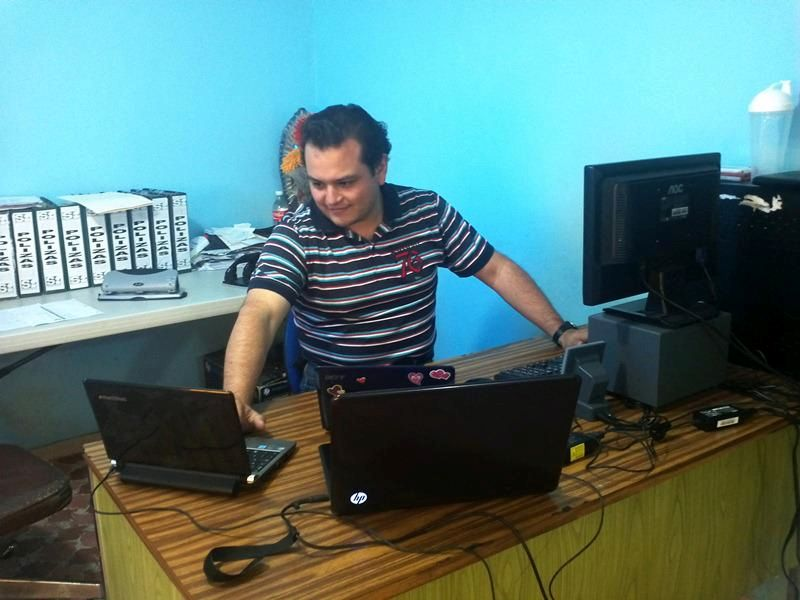
Pues Dani y yo estuvimos así, tranquilos, contentos y seguí
visitándola igual que siempre, los fines de semana, escribiéndonos a diario, pero aun siendo novios a
escondidas, fue en esta segunda etapa cuando le empecé a insistir que me dejara hablar con sus papás para
pedirles permiso de que fuéramos novios, y ya poder andar formalmente sin estarnos escondiendo, pero ella
no quería, le daba miedo que sus papás se fueran a enojar. No importa cuantas veces se lo dije, nunca quiso que
hablara con sus papás.
Por aquél entonces ella empezó a trabajar en Chedraui, estaba en el área de
panadería, y pues también le rotaban los horarios, a veces le tocaba llegar antes de que abriera la tienda, y
otras veces se quedaba hasta después de cerrar, salía entre las 11 y las 12 de la noche. Yo iba a acompañarla
los días que salía de noche, la esperaba afuera de la tienda, y la llevaba en taxi hasta la parada del camión
porque de ahí se iba hasta su casa en el rancho. De vez en cuando la esperaba afuera con algún detalle, una
rosa, un chocolate, etc, pero por el mes de mayo de 2012 empecé a notar cambios muy radicales en ella. Cuando
salía de la tienda, estaba de malas, no me saludaba, solo pasaba delante de mí y ni me pelaba, empezaba a
utilizar groserías otra vez, y entre más le preguntaba que pasaba, más molesta se ponía. Me trataba aún más
feo que la última vez.
De hecho, los días que me tocaba ir por ella se convirtieron en una especie de ritual
incómodo para mí, porque ya sabía lo que me esperaba; que ella saliera de malas, que ni me dirigiera la
palabra, que se enojara más cada que yo le hablara, en fin, era horrible tener que lidiar con eso. Empecé a
pensar que ella ya no quería andar conmigo. Estaba por llegar la fiesta patronal de su pueblo, era la última
semana de mayo y hubo fiesta en el pueblo vecino, en Tengonapa, donde estuvimos viviendo con el tío
Belisario y sus hijos. A esa fiesta no pudo ir ella porque estaba trabajando, pero yo acompañé a su familia un
rato, y llegó un momento en el que estuve platicando con su mamá y le dije a manera de insinuación que si nos
daría permiso a Dani y a mí de andar. Ella no se mostró ni sorprendida ni se enojó ni nada. Pero me dejó también
sin respuesta.
Los siguientes días fue lo mismo con Dani, salía del trabajo como sin ganas de verme, me
trataba de lo peor y al parecer entre más le rogaba, más mal me trataba. Yo estaba desesperado, no sabía por
que se comportaba así. Empecé a idear un plan para tenerla contenta en la fiesta del 13 de junio. Que por
cierto el 13 de junio es cumpleaños de Karen, y sí, le pusieron de nombre Antonia, se llama Karen Antonia Juan
Santiago, y sus compañeros de la escuela le hacen burla que tiene 4 nombres y ningún apellido. Bueno, ya que a
Dani le gustaba mucho irse a los bailes y que era casi seguro que se iría al del 13 junio, mi plan era aprender a
bailar y llevarla al baile, además de conseguir el permiso de sus papás para que anduviéramos ya sin poder
escondernos. Porque, tontamente yo pensaba que tal vez eso era parte del estrés que sentía, andar a
escondidas. Pronto me daría cuenta de que era todo lo contrario.
El 5 de junio por fin explotó toda la
situación. Fui por ella como siempre a esperarla afuera de su trabajo, como siempre salió sin hablarme, y
cuando me hablaba era para tratarme mal. Estábamos en la parada, cuando pasa su camión y ella se echó a correr
para subirse sin despedirse ni nada, como si hubiera estado sola. Yo solo esperé a que subiera y ver que todo
fuera bien, me metí las manos a las bolsas de la chamarra y empecé a caminar para la casa igual que siempre,
pensando en qué habré hecho mal. Cuando, a una cuadra de distancia me llega un mensaje de ella al celular, en
donde me decía que ya no podía más y que quería que termináramos, que no me lo pudo decir de frente pero que al
menos ya me lo había hecho saber en ese mensaje. Que diera ya por terminada la relación definitivamente. Le
marqué y no me contestó, le volví a marcar como tres veces más y no me contestaba, me mandó otro mensaje
diciendo que ya no le marcara, que no había nada de qué hablar, que ya habíamos terminado y ya.
Me dejó muy claro que eso era muy diferente e la vez anterior, no me estaba pidiendo tiempo, no me estaba diciendo que lo
iba a pensar, estaba terminando para siempre y ya no quería saber nada más. No lloré durante el camino a la
casa, le marqué a una amiga de allá de Neza que tengo y le conté todo, es que por aquél entonces me llevaba muy
bien con ella, nos comunicábamos mucho por Internet y era como mi confidente, llegando a la casa lloré toda
la noche, a la mañana siguiente le conté a Pá y la verdad no hizo ninguna diferencia, él no tiene mucha empatía
que digamos, su único consejo fue: "Ay hijo, aprende que no debes aferrarte a las personas", esa fue toda la
ayuda que obtuve de él. De hecho, le hice un comentario un domingo en la mañana, le dije: "Siento raro, que
después de 4 años de visitarla, hoy es el primer domingo que no tengo a donde ir." Y a él nada más le dio risa y me
dijo "Estás loco hijo". Creo que entre más le contaba a Pá más mal me hacía sentir.
Después cuando pude ir para allá con Mima se lo conté todo y entre ella y Paco me fueron aconsejando y tranquilizando. Esa ruptura, fue la
más difícil, por la única razón de que ya no había ninguna esperanza, era definitiva y fue cuando aprendí que
hay sentimientos que llegan a manifestarse físicamente también. Me dolía el pecho todo el tiempo, me
costaba trabajo respirar, no tenía hambre, no quería ver a nadie ni saber nada. No paraba de llorar, y lo peor
es que no había nada en el mundo que pudiera hacer para alejar ese sentimiento. Era como estar en una
pesadilla y no poder despertar. Eso me duró varias semanas.
Capítulo 5. Sin novia.
Estuve unas dos o tres semanas sin querer ir a ningún lado, triste, sólo salía porque debía ir al trabajo,
pero nada más. Para acabarla el que me empleaba era su tío y la contadora a la que yo asistía en sus labores era
también tía de Dani, así que cada que cada vez que ellos mencionaban algo relacionado con su familia y se les
salía alguna información de ella pues yo la escuchaba y me sentía más mal. Para septiembre ya estaba entre
comillas bien, ya llevaba mi vida con normalidad y casi sin sobresaltos emocionales. Empecé a buscar el
apoyo de amistades que tenía para desahogarme, olvidar a Idania y seguir adelante. Salí con muchas amigas,
en una ocasión de las que fui a Neza, coincidió en que algunos excompañeros de la secundaria de maravillas se
estaban organizando para reunirse y me invitaron, al final solo fueron tres compañeras y yo, pero me sirvió
la plática para sentirme mejor. Esta foto es de esa reunión, la de azul es Itzel, la amiga a la que le llamé esa
noche que Idania me dejó.
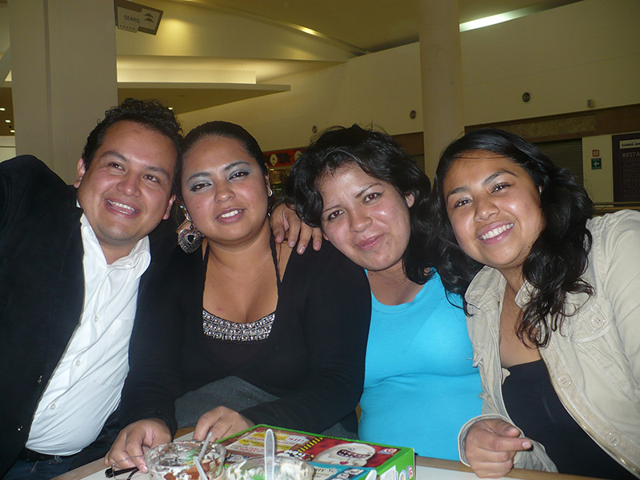
En otra ocasión fui al cine con una muchacha que conocí mientras trabajaba en
Herbalife (después te contaré esa historia), se llama Alin, su mamá estaba empeñada en que me quería como
yerno, pero Alin y yo no congeniábamos bien, nos tratábamos como que muy de lejitos pero bien. Es de ese tipo
de mujeres que se portan como si todavía estuvieran en la primaria, me decía feo, tonto, eres un menso, ni que
tuvieras tanta suerte para que me fijara en ti, etc. Y yo le hacía burla porque estaba muy muy alta, mide más de
1.80m. Con ella fui a ver la de "Valiente" de Pixar. Mira, ella es Alin.
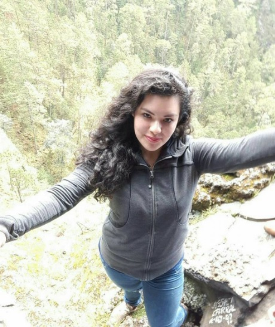
También en ese tiempo y del mismo trabajo de
Herbalife conocí a una tipa que se llama Miriam y fui a ver la misma película de Valiente con ella. Ella es
Miriam.
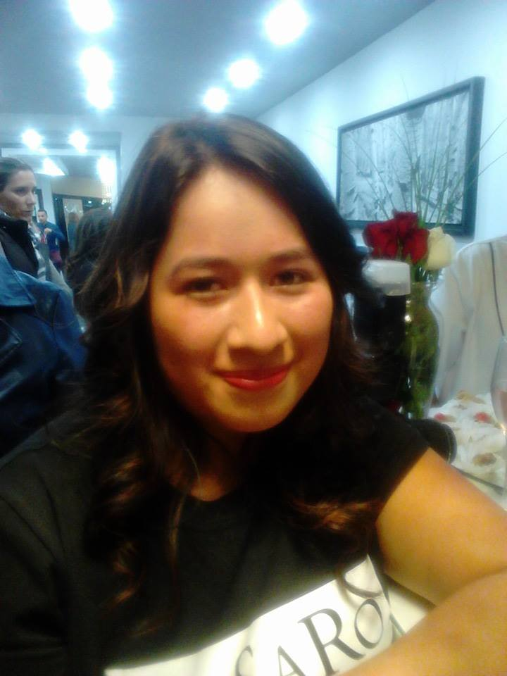
Otra amiga que tuve y que fue con la que más salí a distraerme es Lulú, la conocí por el Facebook un día
que estaba aburrido, platicamos mucho nos entendimos bien y empezamos a salir, a veces a tomar un café o un
helado, otras veces al cine y así, ella es con quien más estuve saliendo. Ella es Lulú.
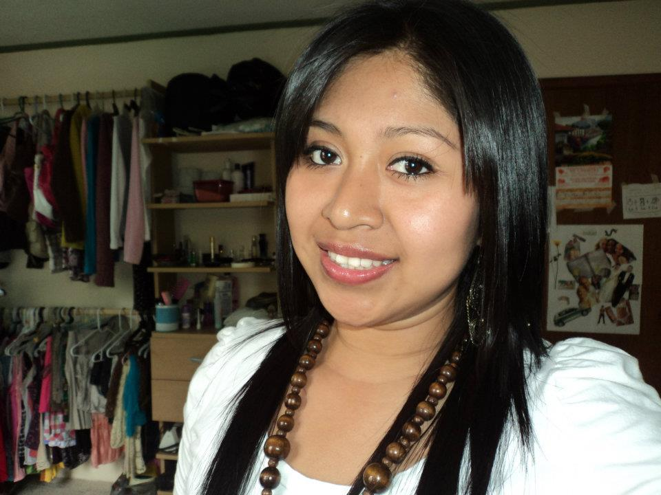
Y también salí con
Karen una vez al cine y otra a tomar un café, aunque ella y no nos habíamos conocido por medio de Dani, siempre
procurábamos dejarla al margen de nuestras pláticas, yo no le preguntaba por ella y Karen tampoco me la
mencionaba. Ella fue muy comprensiva conmigo y nunca jugó el papel de la "amiga espía" que obtenía
información de mi para ir corriendo a contársela a Dani. Siempre me dejó en claro que mi amistad con ella era
muy aparte y muy independiente. Gracias a ella pude irme olvidando del dolor que sentí en la ruptura con
Dani, es una muchacha muy inteligente y sencilla a la vez. Ella jamás hace burla ni broma de nada, es
extremadamente respetuosa y siempre tiene comentarios positivos hasta de la situación más mala. Aquí
estoy con Karen ya unos años después de la primera foto que te enseñe de ella.
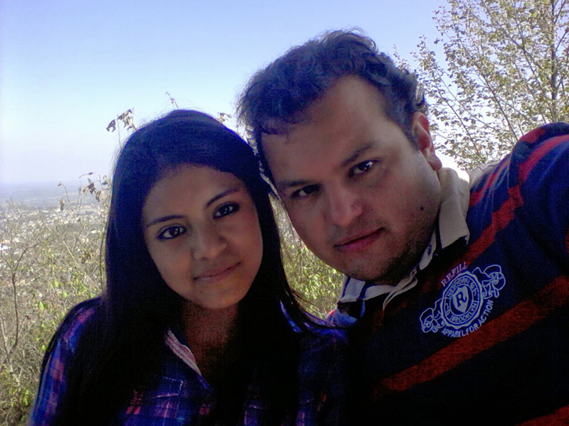
Por eso te decía al principio que
ella había tenido un papel relativamente importante en la trama de la historia porque ha sido la mejor amiga
de Dani desde la infancia y siempre ha estado alrededor de nosotros, entrando y saliendo de nuestra
historia y siempre para bien. Gracias a ella no cometí muchas tonterías, como olvidarme de todo y salir
huyendo a México, me aconsejaba y me mantenía con la cabeza fría. Hoy en día es enfermera, nos invitó a su
ceremonia de graduación.
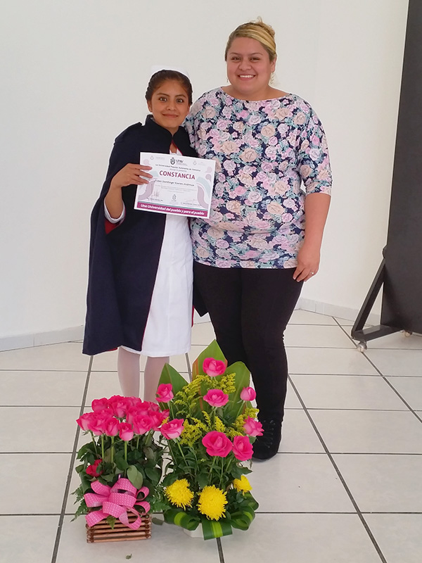
Y aquí está con nosotros el día de la boda, como verás es una amiga muy cercana.
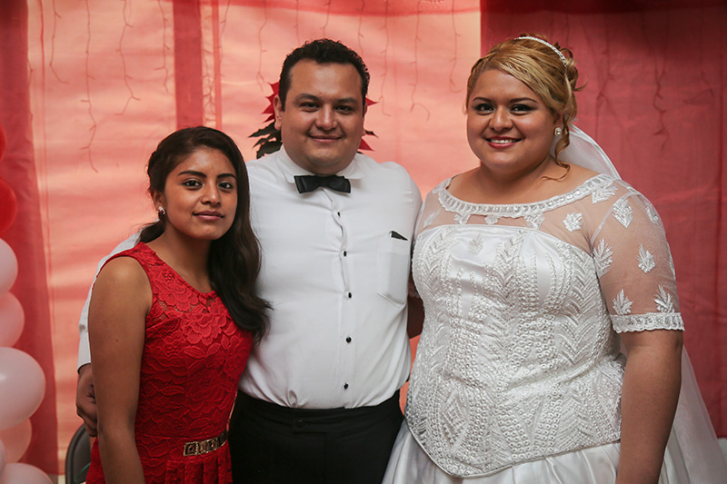
Ha influido muchas veces en nosotros, a veces en la toma de decisiones y otras en la manera de pensar. He de
aclararte que, a pesar de que salí con muchas amigas, nunca hubo al menos por mi parte otra intención que
salir a distraerme. Nunca me fijé en ninguna de ellas ni pretendí andar con alguna. Todo fue en plan de amigos
siempre. Aun así hubo un par de malentendidos por ahí. Uno con Miriam, que estuvo a punto de provocar un beso,
pero no caí. Y otro con Lulú, que hasta me confesó que ella pensó que yo era gay, jejeje. Pero bueno el caso es
que toda la segunda mitad del 2012 estuve intentando por todos los medios olvidar a Dani y concentrarme en
estar bien yo. La contadora con la que trabajaba es una persona extremadamente desinhibida, anduvo metida
en muchas cosas demasiado locas, cosas que mi mente aun inexperta no lograba concebir. Es de las personas
que no se escandalizan con nada y a todo le entran. Anduvo de novia con gente que nunca me hubiera imaginado,
desde un matón, hasta un sacerdote. Es del tipo de gente que se siente que está en la cima del mundo y que tiene
la razón en todo, y pobre de aquel que la contradiga porque se vuelve su archi enemigo. Actualmente vive en
unión libre con el mejor amigo de su hijo adolescente, y del cual ya tiene otro hijo. Con eso te digo todo.
Afortunadamente yo nunca la contradije y me llevé muy bien con ella el tiempo que trabajé ahí, tanto que me
empezó a desinhibir a mí también, el constante contacto con ella me fue haciendo cambiar algunas maneras de
pensar. Empezaron a pasar por mi mente frases como "¿Y si todo mundo lo hace, yo por qué no?", "¿Qué tiene de
malo?". Y es en ese momento en el que todo me empieza a valer gorro, me empieza a cambiar la actitud y fue en ese
entonces cuando cometí el error de emborracharme en la oficina con ella, ya te conté esa historia. Ya por
octubre conocí a una muchacha con la que tuve la relación más extraña y caótica de todas.
Capítulo 6. Carmen.
Como la ciudad de Xalapa es muy pequeña en comparación con la CDMX, me acostumbré a caminar casi a todos lados.
Iba de la casa al trabajo caminando y también de regreso.
Resulta que, en las tardes, o a veces noches, que salía de trabajar, pasaba a compararme un elote,
de esos que venden preparados con mayonesa y queso, en un puesto que me quedaba a medio camino hacia la casa.
Me fui haciendo amigo de la señora que los vendía, y se me hizo costumbre pasar a saludarla aunque a
veces no le comprara, me quedaba jugando con su hijo, un niño como de 11 años y su prima como de 13.
A veces me pasaba hasta una hora ahí en el puesto de la señora jugando con los niños.
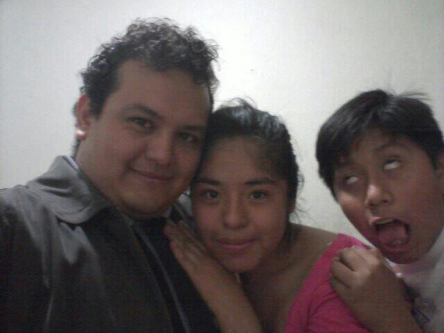
A la señora le conté sobre Idania y muchas otras cosas, en ocasiones, cuando yo llegaba al puesto de elotes,
la señora me preguntaba por ella, y yo le contaba mas o menos como iba la situación. Supo del rompimiento y
de muchas otras cosas, era como un desahogo para mi platicar con ella y una distracción jugar con su hijo y su sobrina.
Mas o menos como por agosto, esa señora contrató a una muchacha para que le ayudara a vender, porque le estaba
yendo tan bien que ya no se daba abasto para atender ella sola, además de que quería empezar a vender más variedad
de "antojitos". Esa muchacha que contrató se llama Carmen, y como yo iba por ahí muy seguido, pues también
la empecé a conocer y a tratar, es dos años menor que yo, en ese entonces yo tenía 28 años y ella 26.
Me cayó bien y con el paso de los días fuimos agarrando confianza, tanta que empezamos a salir, igual que
con mis otras amigas, al cine, al parque o a otros lados. Me empezó a llevar a su casa, y ahí me estaba las
horas platicando con ella.
Esta foto la saqué de su Facebook porque todas las fotos que yo tenía de ella las eliminé por completo de mis respaldos.
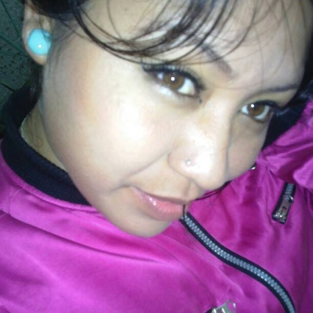
Pues estuvimos saliendo más o menos dos meses, septiembre y octubre, para esas fechas ella ya no trabajaba
con la señora, al parecer no se entendieron muy bien, pero yo seguí viendo a Carmen, iba mucho para su casa
y platicábamos durante horas, a veces Pá me hablaba al celular preguntándome que si todavía estaba en la oficina,
y yo le decía que no pero que ya iba a regresar a la casa. Y es que de la oficina salía casi siempre como a las
7 pm, llegaba a la casa de Carmen como en 15 minutos y me estaba ahí como hasta las 10 de la noche. Todo era
platicar y desahogarnos, ella también me contó de sus relaciones anteriores, y de lo mal que le había ido con
el papá de su hijo. Porque la conocí con un hijo que en ese entonces iba a la primaria, tendría como 8 años el niño.
Y ella vivía sola con su hijo en un cuartito que rentaba.
Un día a principios de noviembre, la contadora de la oficina me dijo que su hermana, o sea la mamá de Dani,
iba a hacerle una fiesta a su hijo, porque iba a cumplir creo que tres años, y me dijo que me yo también estaba invitado.
Hasta ese momento, recuerda que yo seguía siendo como que "amigo" de la familia, porque nunca había admitido abiertamente
que fui novio de Dani. Y aunque ya no los visitaba ni los veía, de vez en cuando la mamá de Dani me mandaba un saludo
o una invitación a sus fiestas. El niño que iba a cumplir los tres años se llama Diego (mi actual cuñado),
su cumpleaños es el 4 de noviembre, y como para esa fecha yo ya me sentía más tranquilo y mas seguro, acepté la
invitación a la fiesta, aun sabiendo que me iba a encontrar frente a frente con Dani y no la había visto desde junio,
cuando me terminó.
La contadora sabía lo mucho que había significado para mí su sobrina Dani, así que me hizo una advertencia con el
mayor tacto posible para que no me fuera a alterar. Me dijo que lo más seguro es que Dani estuviera en la fiesta con su novio.
En ese momento se me vino el mundo encima. Todo lo que yo creía que había logrado "olvidándola" se fue a la basura, y
sentí el mismo dolor que el día que me dejó. Entendí que no la había superado todavía, que me afectaba mucho saber que
estaba con otra persona. Y mi mente daba vueltas. Me preguntaba: "¿cómo es posible que me haya reemplazado tan rápido?",
"¿Será que nunca me quiso?", "Yo sufrí tanto tiempo intentando olvidarla y ella así de la nada ya tiene novio?", pero
la pregunta que mas me causaba conflicto era: "¿Cómo es posible que ya ande con un novio formal, cuando a mi nunca me
dejó pedir permiso con sus papás?", es decir, yo estuve años con ella y nunca me quiso sacar a la luz como su novio.
En cambio, llega un tipejo cualquiera con el que no tiene mucho tiempo de andar y ya es el novio formal, con el que va
a las fiestas, ya con permiso de sus papás y todo. Eso me causaba una rabia y una tristeza que nunca la había sentido. Me sentí fatal.
Entré a mi Facebook y hasta ese momento se me ocurrió buscarla, y descubrí que ella también tenía su cuenta de Facebook.
No tenía fotos con el tipo, pero sí muchas publicaciones con frases como: "Que feliz soy", "Ahora sí me pegó duro el amor",
"Que enamorada estoy", etc. Después de ver todo eso, caí en una espiral emocional hasta el fondo. Esa noche fui a casa de
Carmen y le conté todo, le dije lo mal que me sentía y ella me propuso algo. Me dijo "Voy contigo a la fiesta, para que
ella vea que no estás solo. No les vamos a decir que nada más somos amigos, vamos a dejar que se imaginen que somos novios,
para que le duela a ella también."
Estaba tan dolido que me pareció buena idea, y así le hicimos, ese día llegué con Carmen y con su hijo a la fiesta.
La mamá de Dani, que de ahora en adelante llamaré Yeni, nos recibió muy bien, nos dio la bienvenida, nos pasó a sentar a una
mesa y nos sirvió de comer. Yo buscaba discretamente a Dani, veía a todos los invitados, pero ella no estaba. Lo que sí noté
es que toda su familia nos veía y murmuraba, el plan de Carmen estaba funcionando. Al poco rato de estar ahí escuché a lo
lejos que alguien de la familia dijo: "Mira ya llegó la Dani" En ese momento intenté actuar lo más natural posible, fingir
que no había escuchado nada, que no me había dado cuenta de que llegó, etc, solo alcancé a ver de reojo que Dani venía entrando
acompañada de varias personas. Se sentaron y empezaron a comer, yo no volteaba para donde ella estaba, fingiendo que yo ni
siquiera sabía que ella estaba ahí. Pero toda la familia estaba evaluando nuestras reacciones, tanto la mía como la de ella.
Porque para este momento del relato debo aclarar que casi todo el tiempo que anduve con ella su familia lo intuyó, todos se
lo imaginaban porque era obvio. Imagínate: Un "amigo" que no deja de visitarla constantemente durante años, que está pegado
de ella todo el tiempo, que no falta a ninguna fiesta y que es inseparable de Dani y de Monse (su hermana). Obviamente toda
la familia se imaginaba que éramos novios pero nadie decía nada, y cuando dejé de ir a verla, todos supieron que habíamos terminado.
Por eso el día del cumpleaños de Diego todos estaban a atentos a ver que hacíamos porque sabían que llevábamos casi medio
año de no vernos.
Pero ella no se acercó a saludarme, y yo actué todo el tiempo como si no la conociera. Pero la verdad el hecho de saber
que ella estaba con el tipo ese me daba coraje. Carmen se dio cuenta de lo incómodo que estaba yo y me dijo que mejor nos fuéramos.
Entonces nos despedimos de Yeni, le dimos las gracias y nos fuimos de ahí. Ese día, para quitarme el mal sabor de boca
me llevé a Carmen y a su hijo al cine. Vimos la de "Ralph el demoledor", que se acababa de estrenar. Me gustó mucho,
la disfruté, de hecho, estoy esperando la segunda parte. jeje. Pero bueno, regresando al tema. Vimos la película,
la acompañé a su casa y no volvimos a hablar del tema de la fiesta.
A los pocos días me dice la contadora que estaba invitado a otra fiesta familiar, esta vez al cumpleaños de Yeni
(mi suegra), que es el 13 de noviembre. Y pues por la experiencia anterior no sabía si ir o no.
Unos días antes, el 10 de noviembre, estaba en casa de Carmen platicando como siempre, cuando empezamos a tocar
el tema de la fiesta pasada, a la que fuimos, ella me dijo lo que ya sabía, que estaba muy lastimado todavía, que
no había superado todavía a Dani, que ya debía dejarla ir, que ella tenía otra pareja, y pues, no pude evitar
ponerme a llorar, lloré mucho tiempo y le conté todo lo que sentía, me desahogué un largo rato, y ella me abrazaba
y me consolaba. Llegó un momento en que me sentí tan apoyado por ella, que le dije que si quería ser mi novia.
En ese momento no sabía lo que estaba haciendo, tal vez era por despecho, tal vez era por coraje, no sé, el caso
es que le pregunté que si quería y me dijo que sí. Nos besamos, nos quedamos abrazados un buen rato, hasta que se
hizo tarde y me fui a la casa. No sabía cómo sentirme, por un lado me sentía bien de haberme desahogado llorando,
por otro me sentía seguro y orgulloso de estar estrenando una nueva relación de noviazgo, me sentía con esperanza en
que todo iba a ir bien de ahora en adelante, soñando como sería la relación con mi nueva novia, emocionado por las
nuevas experiencias que estarían por venir. Quiero que notes que no mencioné sentirme "feliz", esa noche sentí emoción,
desahogo, esperanza, pero cuando iba de camino a la casa noté que no podía decir que me sintiera feliz, ya que había
muchos otros pensamientos que me llevaban a Dani. Así como yo iba a vivir nuevas experiencias con Carmen, pensaba en
que tal vez Dani también las estuviera teniendo con su novio, y eso me generaba celos y tristeza, aun quería estar con ella.
No podía dejarla ir.
Llevé a Carmen al cumpleaños de Yeni, pero esa vez no estuvo Dani porque ese día le tocó trabajar, aún estaba en Chedraui.
Estuvimos un buen rato ahí, comimos, le llevé un regalito a Yeni, y nos regresamos en la noche a casa de Carmen.
El resto del mes de noviembre fue de ir a visitar a Carmen a su casa después del trabajo, cenaba con ella y me estaba ahí,
con la diferencia de que ya nos tratábamos diferente, tú sabes, abrazos, besos, palabras de cariño, etc.
Por aquel entonces ella trabajaba por su cuenta vendiendo comida. La preparaba en la noche, se dormía hasta tarde
por estar haciendo comida, como a la 1:00am, y a la mañana siguiente salía a vender, echaba toda la comida, platos
y cucharas desechables en un carrito que parecía como del mandado, pero mucho más grande, como el carro que traen
los empleados de Yakult que andan vendiendo en la calle. Ella se iba con su carrito lleno de comida a una gasolinera
donde ya tenía sus clientes que la esperaban para comprarle el desayuno.
Todo iba bien hasta que poco a poco empecé a notar algunas cosas que en un principio fueron incómodas, pero con
el paso del tiempo se volvieron insoportables.
Entrando el mes de diciembre ya me incomodaba que Carmen me absorbía mucho tiempo, a cada rato me llamaba al
celular diciéndome que fuera a verla, pero no le importaba lo que yo estuviera haciendo, le daba igual llamarme
en horas de trabajo que a la media noche. Y como soy muy malo para decir que no, doblé las manos en todo momento
y me metí en algunos problemas tanto de trabajo como con Pá por estar saliéndome a verla a horas no adecuadas.
Empezó a celarme mucho, no le gustaba que yo tuviera amigas, me hacía drama si alguien me mandaba mensajes y
manipulaba mis decisiones. Me controló un tiempo, con chantajes lograba que yo hiciera lo que ella quería.
La verdad es que yo estaba muy verde y ella demasiado experimentada en ese entonces, me movía como ella quería.
Hacia finales de diciembre, una amiga que conocí en Iztapalapa, en la clase de karate a la que iba con Petaca,
me dijo que, si podía visitarme en Veracruz, y le dije que sí, lo planeamos y le dije a Pá que iba a venir una
amiga desde México a estarse unos días con nosotros. Él estuvo de acuerdo y planeamos un viaje a la playa para
cuando ella viniera.
Le conté a Carmen y se puso en un plan bien pesado, me preguntaba que quien era ella, por qué le hablaba,
por qué se tenía que quedar en mi casa, etc, al final se hizo la víctima y me dijo, bueno, si quieres esa
semana no te molesto para que puedas estar con tu amiga, no te voy a marcar ni te voy a buscar para nada.
Le tomé la palabra y así quedamos. Llegó mi amiga, dijo que iba a estar una semana con nosotros, la llevé a mi trabajo,
la llevé a pasear al parque, y a conocer lo poco que yo conocía de la ciudad de Xalapa.
Pero esa semana que mi amiga estuvo aquí, fue la semana que más me llamó Carmen, estuvo sobre mi todo el tiempo,
hasta se nos pegó en el viaje a la playa, no me soltó por nada y yo me la pasaba disculpándome con mi amiga por
no haberla atendido como debía por estar con Carmen. Y mi amiga me dijo que no me preocupara, que ella entendía
la situación, y también me dijo: "Hablé con tu papá, está preocupado por ti, ha visto cómo te absorbe Carmen y
no le parece bien.", eso me dejó muy pensativo, y desde ese momento empecé a buscar la manera de terminar la
relación con Carmen, porque ya no estaba a gusto con ella, aquello no era una relación sana. Constantemente me
ponía entre la espada y la pared, o hacía lo que ella quería o llevaba a cabo mis obligaciones de la casa y del trabajo.
Ya era una tortura para mi escuchar que sonara mi celular porque sabía que era ella, y sabía que me llamaba para que fuera.
Siempre era para algún mandado o simplemente para tenerme ahí con ella, bien checado.
Así llegamos hasta el 10 de febrero de 2013, apenas 3 meses después de que empecé a andar con ella,
cuando por fin tuve el valor de enfrentarla y decirle que ya no estaba a gusto, que no quería seguir
con esa situación, que me agobiaba tener que estar a su servicio a todas horas. Y ella se puso en un
plan de: "Bueno, si no te gusta pues búscale por otro lado", pensando que yo no me iba a atrever a dejarla.
Entonces yo le dije que lo único que quería era que ella cooperara un poco con la relación, porque me
hacía sentir muy presionado. Ella se mostró inflexible y me dijo que si no estaba a gusto que mejor
terminábamos, que ya hasta ahí lo dejábamos; como estábamos en la calle, ella paró un taxi y se subió,
sin darme oportunidad de decir nada. Es ese tipo de mujeres que les gusta dejar así a un hombre para provocar que
uno las siga y les ruegue. Lo que ella no sabía es que cuando el taxi arrancó y se fue, yo me quedé con una
sensación de alivio y de libertad bien padres, jejeje. Yo pensaba "Por fin terminó". Y regresé tranquilamente
a la casa. Me acuerdo que me preparé unas palomitas y me puse a ver películas toda la tarde, relajándome y celebrando mi libertad.
Capítulo 7. Tercera etapa de noviazgo.
La relación con Carmen había terminado, y yo estaba muy tranquilo de que fuera así, porque supe
lo que era tener una novia celosa, manipuladora, chantajista y encimosa hasta que anduve con
ella. Es realmente una pesadilla. Aun varias semanas después de haber terminado con ella me
llamaba y me iba a buscar a la casa, según ella para hablar, pero la verdad es que, su berrinche de
que habíamos terminado le había salido mal, ella esperaba que fuera una ocasión más para que yo
le rogara y poder tener control sobre mí, pero para mí fue la oportunidad de salir de esa relación
enfermiza que no me estaba llevando a nada.
Las primeras dos o tres veces la recibí bien en la casa
y me dispuse a escuchar lo que me tuviera que decir, pero ella empezó a intentar chantajearme de
nuevo. Provocaba algún comentario de mi parte para hacerse la ofendida y salir enojada
azotando la puerta de mi cuarto, obviamente esperando que yo la siguiera, pero a mí me daba risa
ver como hacía su drama y se iba. Ella no podía regresar porque tendría que tragarse su orgullo y
deshacer su teatrito de que se había ofendido, así que el que debía dar el siguiente paso era yo,
pero no lo daba, yo solo prendía la tele y me ponía a ver películas.
Era como jugar a las
escondidas, dejar que ella se fuera a esconder y no ir a buscarla. Días después me marcaba con el
mismo cuento de que si podía verme para hablar. Pero cuando vi que su intención era recuperar a
quien le hacía los mandados a toda hora, de plano le hablé derecho y le hice ver que estábamos
mejor así. Que, aunque al principio fue agradable, su manera de ser conmigo ya no me gustaba. En
ese momento me dijo que lo entendía, y que ya no me iba a molestar, pero durante las semanas
siguientes me siguió buscando, ahora con el pretexto de que su hijo me quería ver, porque según
se había quedado muy encariñado conmigo.
Me costó mucho trabajo quitármela de encima. Pero
poco a poco se fue calmando conforme vio que de plano a mi no me interesaba ya nada con ella. No
recuerdo en que me exactamente, pero fue por esa época en la que yo intentaba librarme de Carmen,
que recibí una llamada muy inesperada.
Pá entro a mi cuarto con el teléfono de la casa y me dijo,
"te hablan", le pregunté que quien, y me dijo, "Delfino" (el papá de Dani), me quedé sorprendido
porque no lo esperaba. Pero al mismo tiempo me di cuenta de que no se me movía el piso como antes,
ahora sí había superado a Dani y nada de lo que se relacionara con ella me ponía mal. Así que tomé la
llamada.
El señor me explicó que me hablaba porque necesitaba mi consejo, él quería comprar una
laptop para sus hijas, para que la utilizaran en sus trabajos de la escuela, pero era de uso y
quería que yo la revisara para que le dijera si valía la pena y si el precio era justo. Para ese
entonces yo ya tenía fama de "experto en computadoras", fue así como me contrataron en la
oficina de la constructora, hacía las veces de técnico de computadoras y también de auxiliar de
la contadora. Pues le dije que sí y quedé de ir a su casa a ver la computadora al otro día temprano.
Ya no sentía ansiedad i nervios por ver a Dani, así que al día siguiente me preparé con mis
herramientas, discos, memorias, etc., todo lo que necesitara para hacerle una buena revisión
a la computadora. Me citaron en la tienda, que es donde trabajo y vivo ahora.
Llegué y me recibió
Yeni (la mamá de Dani), me dijo que me pasara y andaba apurando a Dani para que se fuera conmigo. Me explicaron que
había que acompañar al dueño de la laptop a un empeño para que la sacara, yo la revisara y entonces
ellos hicieran el trato. Pero mandaron a Dani a que me llevara al empeño y se pusiera de acuerdo
con el dueño de la laptop.
Ella iba muy apenada de que casi la obligaron a ir conmigo. Yo iba muy
tranquilo, ya no sentía nervios ni nada. En el camino le empecé a hacer la plática, le pregunté
como había estado, como le había ido, etc. Para ese momento ella todavía andaba con su novio,
pero a mí ya no me afectaba. Aun así, procuré no preguntarle por él. Quise mantener distancia y no
tocar temas personales.
El trato se hizo y compraron la laptop, y ya de regreso en la tienda, sus
papás me pidieron de favor que me llevara la computadora y la vaciara de todo lo que tuviera y se
las dejara restaurada como de fábrica, lista para trabajar, además de darle una limpieza y todo
lo que necesitara hacerle. Me la llevé y le di formato al disco, le instalé Windows 7 en limpio,
office, etc. Cuando estuvo lista se las llevé, y para probarla la conecté al wifi de ellos y les
enseñé que funcionaba bien con el internet. Entré a mi cuenta de Facebook, busqué el perfil de
Dani y le mandé solicitud de amistad, todo enfrente de ella y de su hermana. Según yo probando la
computadora, pero era plan con maña para volver a tener comunicación con ella. Porque aun
cuando estaba tranquilo, sí sentía la curiosidad por volver a estar en contacto con ella,
aunque fuera como amiga.
Les dejé la computadora ahí, y aunque yo no les quería cobrar nada,
ellos insistieron en pagarme y creo que terminaron dándome 200 pesos o algo así. Quedaron muy
agradecidos. A los pocos días, estando en la oficina, me llegó la notificación de que Dani me
había aceptado en Facebook, y no dudé en saludarla. Empezamos con conversaciones sencillas
como: "Hola, ¿cómo estás?, ¿qué haces?, ¿qué tal funciona tu computadora?", de ahí empezamos a
platicar de más cosas, como de nuestros trabajos o situaciones de la casa.
Con el paso de los
días, las pláticas se hicieron más frecuentes, hasta llegar al punto en que daban las 12 de la
noche y seguíamos platicando, ya en la privacidad de la noche como que agarrábamos más
confianza y nos empezábamos a adentrar en temas más personales. Algunas veces discutíamos
sobre quien le hizo más daño a quien, o quien había tenido la culpa del rompimiento, había días
que terminábamos la plática peleados, pero nos reconciliábamos al otro día.
Así estuvimos
unas semanas, hasta que poco a poco empezamos a decirnos cosas más bonitas, como que nos
extrañábamos y que había sido muy bonito ser novios. Nos quedamos de ver algunas veces, ya sea en
el parque o en mi casa. Me cuenta que su mamá la ayudaba a escaparse de la casa para que fuera a
verme, porque su novio era muy celoso y como vivía enfrente de su casa, nada más la estaba
cuidando a ver a qué hora se salía ella, o si alguien se le acercaba. A sus papás les caía muy mal el
novio de Dani. Era un borracho, violento y celoso de esos extremos que se sienten dueños de su
novia y que le echan bronca a cualquiera que la voltee a ver, que no las dejan tener amigos, que las
están checando a cada rato y no las dejan asomarse ni a la puerta de su propia casa. Dani me cuenta
que su relación con ese tipo fue muy difícil. Terminó con él en febrero, también le costó
separarse de él porque no dejaba de buscarla.
En fin, el caso es que su mamá le ayudaba a escaparse
para ir a verme. Poco a poco fuimos sanando las heridas, aclarando las cosas y siendo sinceros,
nos confesamos que aún nos extrañábamos mucho.
El 3 de abril de 2013, durante una plática muy
emotiva por Facebook, le pregunté si quería volver a ser mi novia. Yo estaba por salir del
trabajo, le dejé la pregunta y le dije que lo pensara mientras yo llegaba a la casa, que yo iba a
llegar a ver su respuesta en mi cuarto. Cuando llegué y prendí la computadora, su respuesta ya
estaba ahí. Era un rotundo sí. Platicamos mucho esa noche, emocionados por haber regresado. A
los pocos días nos vimos en mi casa porque yo invité a Dani y a sus hermanos a ver películas en mi
cuarto. Sus hermanos estaban entretenidos con la tele mientras ella y yo nos escondimos para
abrazarnos y platicar lo mucho que nos habíamos extrañado. No tardó mucho tiempo cuando
empezamos a planear el momento en que yo fuera a hablar con sus papás para formalizar nuestro
noviazgo, ahora sí jeje.
El 31 de mayo fue el día que elegimos, ella preparó a sus papás
diciéndoles que iba a ir yo a hablar con ellos, y hoy en día me cuenta que le hacían burla de que iban
a preparar comida como si fuera fiesta, para su "pedida de mano". Pues llegó el día y fui a su casa,
y Yeni le dijo a su esposo: "Daniel viene a hablar contigo, dice que tiene que decirte algo". Y su
papá es de esos señores muy serios, que pareciera que todo el tiempo está enojado. Pero no le tuve
miedo y hablé. Aunque no recuerdo cada palabra que le dije. En general solo fue mencionarle la
relación que tenía con su hija, el respeto y el cariño que sentía hacia ella, y que yo quería hacer
bien las cosas, por eso había ido a pedir su permiso para andar con su hija como novio
formalmente.
Él sólo me dijo que estaba bien, que solo quería ver que la respetara mucho y que no
quería que anduviéramos en la calle hasta tarde, que nos iba a dar permiso de salir a pasear, pero
que quería a su hija de vuelta antes de oscurecer. Le dije que sí, que no se preocupara por eso. Y
así quedamos, ahora éramos novios formales y podíamos tratarnos como tal enfrente de toda la
familia, por fin. Ya íbamos a todas las fiestas de la familia juntos y tomados de la mano, ya
éramos libres de salir a pasear, porque nunca lo habíamos hecho. Esta tercera y última parte del
noviazgo ya fue la etapa de madurez, donde empezamos a hablar seriamente de casarnos, de formar
una familia, y dejamos atrás todos los pequeños problemitas que habíamos tenido; para
nosotros ya no existían los celos, ni los berrinches ni nada de eso, ya todo eso lo habíamos
vivido y superado.
Establecimos tres reglas sumamente importantes para mantener una
relación fuerte y saludable:
1.- Transparencia total. Nunca debemos ocultarnos nada, hasta
el más mínimo detalle nos contamos por muy insignificante que parezca. No tengo secretos con
ella. De hecho, la transparencia es tal que ella se sabe todas mis contraseñas de correos, de
Facebook, sabe desbloquear mi celular, sabe el NIP de mis tarjetas del banco, etc. Y al revés
también, yo sé desbloquear su celular y acceder a todas sus cuentas, correo, Facebook, etc.
Pero no por eso nos la pasamos checando lo que hace el otro, nos respetamos mucho en cuanto a la
privacidad, eso genera confianza y nunca nos toma una noticia por sorpresa, te pongo un
ejemplo: Un día de regreso de la escuela me encontré a mi amiga Lulú y nos sentamos a platicar unos
minutos en el parque. Ese mismo día le conté a Dani que me había encontrado a Lulu y que había
estado platicando con ella. ¿Te imaginas que algún conocido o familiar de Dani me hubiera visto
con Lulú?, hubiera ido corriendo a contarle y todo se hubiera malinterpretado. Por eso, hasta
el más insignificante detalle nos contamos.
2.- Nunca quedarse callado. Siempre va a haber
malentendidos por una u otra razón, y si uno de los dos hace sentir mal al otro sin querer, el que se
haya ofendido debe expresarlo, no solo quedarse con el sentimiento negativo y dejarlo pasar.
Porque es como tragarse un coraje, eso se acumula y al cabo de un tiempo se genera rencor, y llega
el día en que uno explota y saca en un solo rato todos los corajes que tenía guardados. Por eso hay
parejas que se reclaman hasta lo que pasó hace años, porque lo traen guardado y no se resolvió en
su momento.
3.- Nunca dejar un problema sin resolver. Es como la continuación del anterior. Cuando
surge un problema o una discusión por algo, lo hablamos hasta resolverlo, nunca lo dejamos
inconcluso, para que ninguno de los dos se trague un coraje y lo vaya acumulando. Así cada
problema que tenemos es como si fuera el primero, jamás dejamos que se nos acumulen las
frustraciones o los corajes. Esas tres reglas las hemos respetado mucho desde aquel entonces y
nos ha dado muy buen resultado. Así ha sido nuestra relación desde esa última vez que regresamos en abril
de 2013.
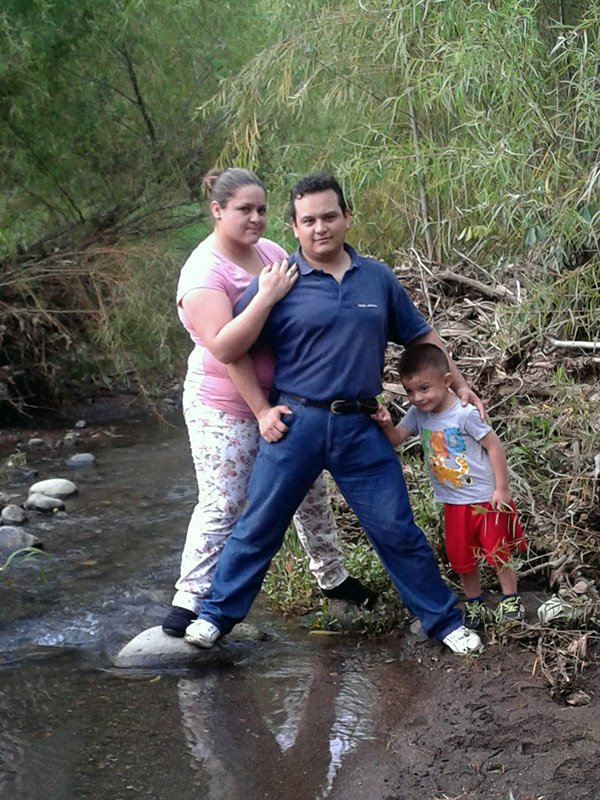
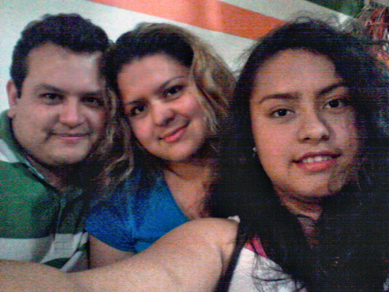
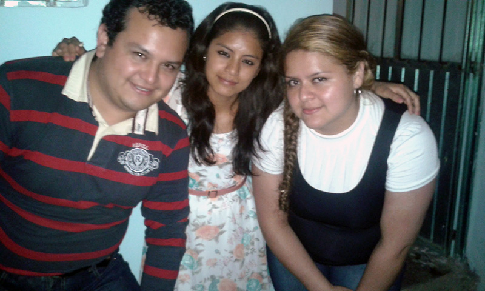
Pero fue hasta septiembre de 2016 cuando pusimos en marcha ya de verdad el plan de
casarnos. Le dije a Pá cuando empecé a buscar el anillo de compromiso, luego me acompañó a la casa
de los papás de Dani a pedir su mano. Planeamos la boda en 3 meses, y finalmente nos casamos el 10 de
diciembre de 2016.
Epílogo.
La razón de que dividiera mi relato no fue por la extensión del texto, sino porque de hecho así fue
mi relación, estuvo dividida en partes muy bien definidas y distintas entre sí:
La etapa de
amigos. En la que aprendí que una persona que puede pasar completamente desapercibida en un
principio puede llegar a convertirse en la persona con la que termino soñando una vez que la
conozco mejor. No es necesario que alguien te atraiga y te enloquezca desde el primer momento.
No sé si alguna vez viste la película "Shallow Hal", es con Jack Black, una comedia romántica
tonta pero que me hizo recordar que así fue mi situación con Dani, me identifiqué mucho, es que me
enamoré de ella al conocer la persona que es y no por la parte superficial. Te recomiendo que veas
esa película para que sepas de lo que hablo. Y sobre todo por su banda sonora. La canción de "Too
Young" de Phoenix es de esas que puedo escuchar todo el día sin cansarme, es una de mis favoritas.
Bueno regresando al tema, Dani ha estado traumada con su sobrepeso desde que era niña, pero yo la
fui conociendo sin fijarme en lo que dijeran los demás o incluso ella misma de ese detalle
superficial, y me quedé completamente enamorado de ella porque es una persona tierna,
sensible, alegre, trabajadora, responsable, hogareña, comprensiva, etc. Son tantas las
cosas que me gustan de ella.
La primera etapa de novios. La relación ideal pero irreal. Fue aquí
donde disfruté de esa relación ideal en que todo es color de rosa, todo es hermoso, todo va bien y
escuchas música en el ambiente, en fin, un éxtasis todo el tiempo. El enamoramiento estaba a
tope.
La segunda etapa de novios. Andar por costumbre. Fue la etapa donde regresamos porque
estábamos acostumbrados a estar juntos. En esa etapa aprendí un poco de auto control, aprendí
que no todo en el mundo era la novia y que debía poner atención a diferentes áreas de mi vida.
La tercera etapa de novios. La formal. Es cuando todo cayó en su lugar y empezó a haber un verdadero
orden. Hacer las cosas bien y formalizar la relación nos permitió hacer planes a futuro.
Respondiendo a tus preguntas:
¿Me dijo por qué me dejó? Sí, pero ya durante la última parte de
nuestro noviazgo, cuando nos empezamos a contar todo. La primera vez fue porque estaba
confundida, ella era una adolescente que empezó a andar de novia a los 16 años con un novio de 25, y
una mamá que siempre la amenazó con correrla de la casa si tenía un novio sin permiso. Se escondió
mucho tiempo conmigo, pero llegó un momento en el que empezó a pensar en que la situación tarde o
temprano se haría insostenible, temía por mí, por ella, por lo que dirían sus papás, no sabía que
hacer ni que pensar. No supo manejar sus sentimientos y se dejó llevar por el miedo, entonces le
puso pausa a la relación, en lo que su mente se calmaba y pensaba que hacer.
La segunda vez fue
porque su vida se estaba volviendo un infierno, en ese entonces estaba bajo mucha presión,
regaños constantes de los papás, nada de apoyo por parte de los hermanos, un empleo que la mataba
de cansancio y estrés, y encima lidiar con el novio que la presionaba con hablar con sus papás,
mientras sus papás la tenían amenazada de que no la querían ver con novio. El punto más crítico
llegó cuando hablé con su mamá y le pedí permiso para andar con ella, no sé si recuerdes que te
mencioné eso. Su mamá no me dijo nada a mí, pero a ella se la acabó a gritos y regaños. Entonces en
lugar de aligerar su carga, la hice peor. Y en la desesperación decidió terminar conmigo.
Aunque luego me confesó que lloraba por haberme terminado, se arrepentía mucho de haberme
dejado ir, pero en ese momento no sabía que más hacer.
Con el paso del tiempo y mucha comunicación
aprendimos, como bien dices, a pensar y a actuar como una sola persona. Ahora cada que se
presenta una situación ya somos capaces de predecir lo que va a hacer o decir el otro, porque
compartimos los mismos pensamientos, los mismos valores, los mismos principios y objetivos.
Ha costado mucho trabajo, lágrimas, corajes, reconciliaciones, pero con el tiempo ella se
hace más como yo, y yo más como ella, los dos aprendemos del otro y cada vez congeniamos más. Como
resultado hay cada vez menos y menos problemas de relación interpersonal.
¿Qué sucedió cuando se enteró su hermana?
Su hermana se enteró durante la primera parte o etapa del noviazgo, como
siempre estaba con nosotros, era solo cuestión de tiempo para que nos cachara en un beso, y así
sucedió. Estaba tan encariñada conmigo que pude notar que le dieron celos, se enojó con su
hermana y procuró ocultar que estaba llorando, pero yo me di cuenta. A pesar de eso, nunca nos
delató. Me quería mucho cuando era pequeña.
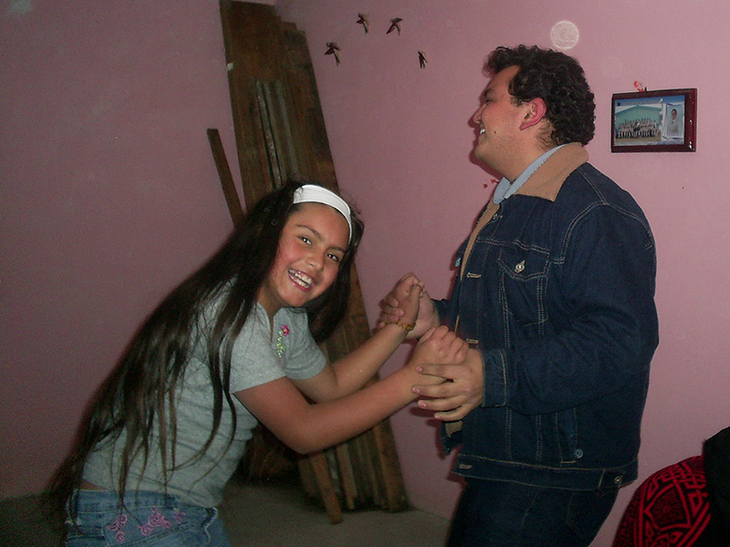
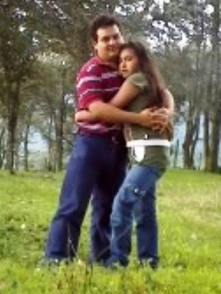
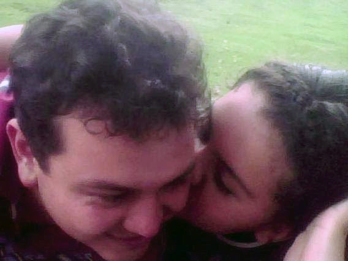
Lamentablemente, conforme fue
creciendo cambió mucho su personalidad, sobre todo al llegar a la adolescencia, se volvió muy
seria, reservada, y hasta un poco irritable. Pero una vez que se embarazó y se casó, volvió a ser casi como antes.
¿Qué pasó cuando se enteraron los papás de Dani de que éramos novios?
Los papás no son tontos, y desde un principio se imaginaron que anduvimos,
pero nunca nos dijeron nada. Fue en la segunda vez que anduvimos cuando yo cometí el error de
abrir la boca y su mamá se enojó, dándole el regaño del siglo a Dani por mi culpa. El papá rara vez se
involucraba.
¿Qué pasó con Karen?
Karen es todo un caso. Es mayor que Dani por unos meses, en este
momento tiene 25, pero a su edad, no ha tenido un sólo novio. Ella huye de las relaciones por miedo
a ser lastimada. Y ha tenido pretendientes de sobra, pero los batea a todos, aun cuando admita
que uno que otro le llegó a gustar, no se atreve a andar con nadie, siempre está sola. Vive con su
mamá y con un montón de hermanos que tiene ya casados, ella es la más chica de todos, creo que su
mamá la tuvo después de los 40 años, de milagro salió jeje. Yo le he dicho a Dani que sinceramente
Karen me parece una chica bonita y que no debería tener miedo de conocer gente y relacionarse
sentimentalmente, tarde o temprano tiene que ir aprendiendo. Pero al menos eso le sirvió para
enfocarse de lleno en su carrera y la acaba de terminar, ya es enfermera, pero aún no ha logrado
conseguir un trabajo de planta. Es muy trabajadora, sacó su carrera trabajando como empleada
doméstica y estudiando los sábados. De verdad que es admirable su tenacidad. Pero hay un
problema que tiene y que Dani y yo le insistimos que corrija, y es que no cuida de su salud, no come
bien, está anémica y aparte ha tenido problemas neurológicos, relacionados con dificultad
para concentrarse o pérdida de memoria. Los doctores le dicen que debe alimentarse bien y
tratarse esos problemas, pero no hace mucho caso. Dani y yo jugamos diciendo que tenemos como
amiga a Dory, la de Buscando a Nemo, porque todo se le olvida, es muy distraída.
Bueno, hay un sin
fin de cosas aun por platicar, tan solo en el breve relato de mi relación con Dani se me fueron 7
correos grandes, y eso que no te conté muchísimas cosas que omití porque no eran esenciales para
el relato pero que te iré platicando poco a poco. Mientras ya conoces más o menos mi historia con
mi esposa. Espero que haya sido entretenido para leerlo. Gracias a estos correos recordé
muchas cosas y me enamoré aun más de mi esposa. Gracias Chac.
← Volver a Historias

 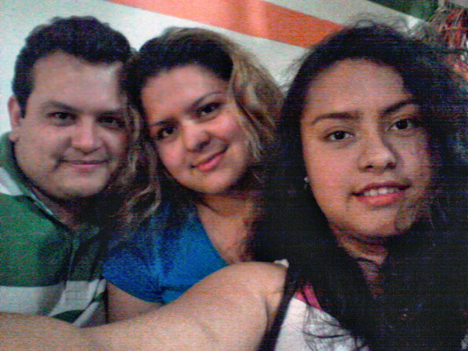
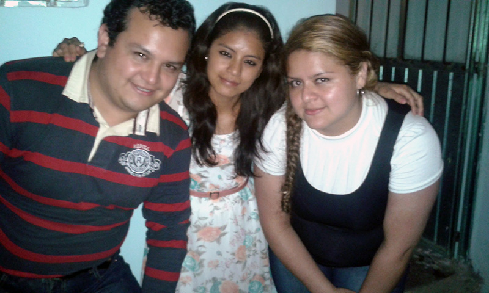
Pero fue hasta septiembre de 2016 cuando pusimos en marcha ya de verdad el plan de
casarnos. Le dije a Pá cuando empecé a buscar el anillo de compromiso, luego me acompañó a la casa
de los papás de Dani a pedir su mano. Planeamos la boda en 3 meses, y finalmente nos casamos el 10 de
diciembre de 2016.
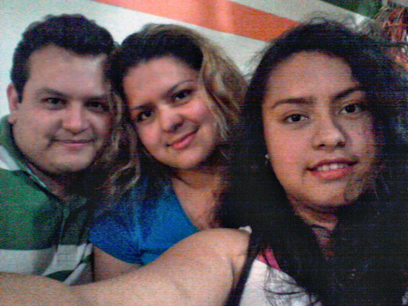
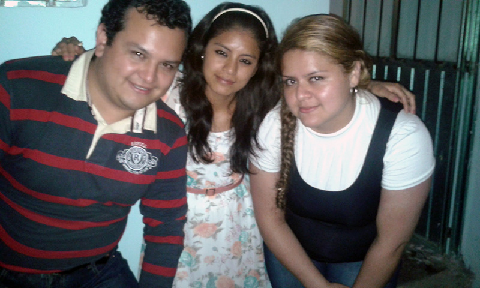
Pero fue hasta septiembre de 2016 cuando pusimos en marcha ya de verdad el plan de
casarnos. Le dije a Pá cuando empecé a buscar el anillo de compromiso, luego me acompañó a la casa
de los papás de Dani a pedir su mano. Planeamos la boda en 3 meses, y finalmente nos casamos el 10 de
diciembre de 2016.